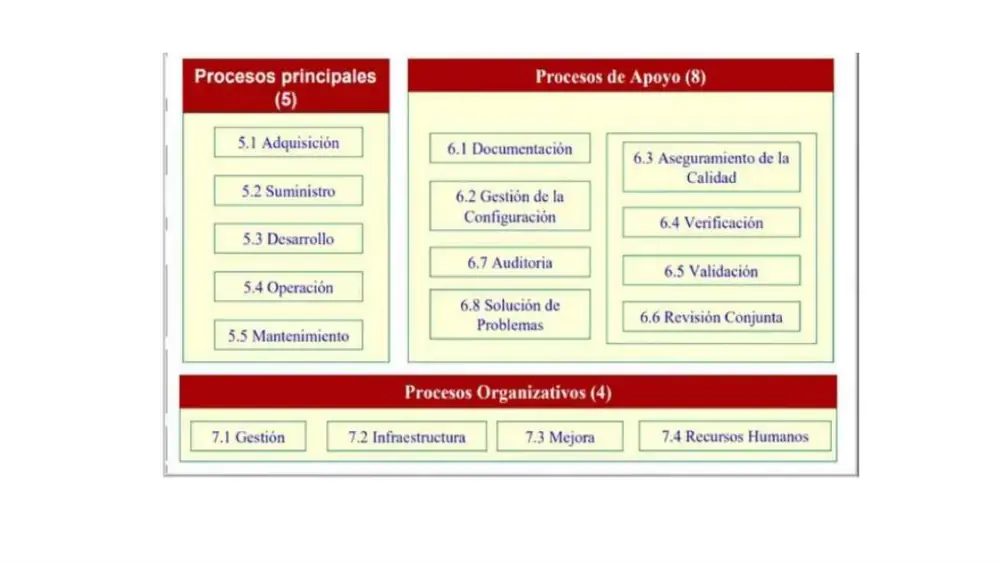
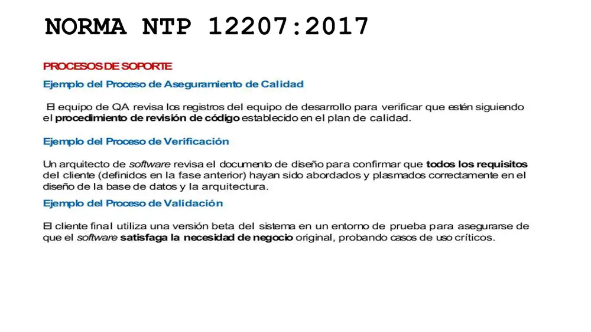
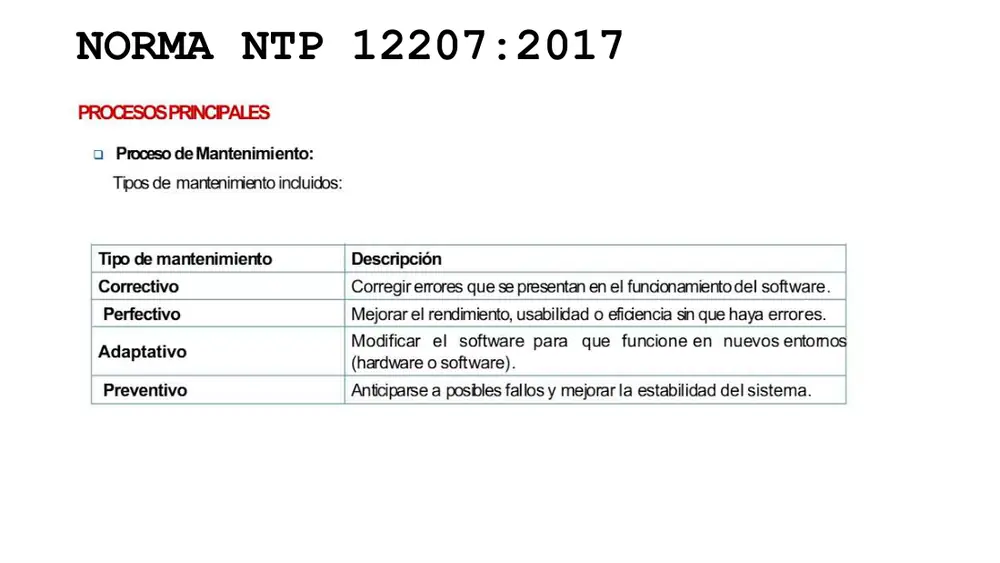

Sesión 5 · Práctica
Casos de examen sobre la NTP-ISO/IEC 12207:2016 (NTP – Norma Técnica Peruana; 3.ª ed., aprobada por INACAL – Instituto Nacional de Calidad, ≡ ISO/IEC 12207:2008, 7 grupos y 43 procesos, obligatoria en el SNI – Sistema Nacional de Informática por la RM – Resolución Ministerial N.° 041-2017-PCM) y su relación con la estructura clásica de 17 procesos (ISO/IEC 12207:1995 ≡ NTP 2004) que usa la profesora en las diapositivas y con la internacional vigente ISO/IEC/IEEE 12207:2017 (4 grupos, 30 procesos) que pide la práctica. El orden es: (1) los casos y ejemplos de clase (diapositivas 24–33 del Mazo A y enunciado de la práctica, Mazo C); (2) los casos de los entregables: primero el G3 (SINEACE Móvil, luego su versión anterior MPCH Chiclayo y las técnicas/casos de éxito de su estado del arte) y después el G6; (3) casos NUEVOS de complejidad muy alta adaptados de documentos públicos peruanos (RM PCM, Directiva SINEACE 2020, procedimiento QC del MEF, metodología del MVCS, Canchari 2020) o creados para el repaso. Cada solución trae tabla de causa raíz, al menos dos alternativas (en calidad la solución no es única: la 12207 se cumple por tailoring), justificación normativa con número de proceso en la edición correcta, KPI (Key Performance Indicator – Indicador Clave de Desempeño) con fórmula y meta, y errores frecuentes. Regla de oro de la S5: antes de responder, pregunta siempre "¿de qué edición me hablan?" — 1995 (5/8/4 = 17), 2008/NTP 2016 (7 grupos = 43) o 2017 (2/6/8/14 = 30).
Caso 1 · Sistema web para un banco: actores, procesos principales y su traducción a 2008/2017
Origen: Diapositiva 24 (clase, Mazo A "Modelo de Calidad ISO/IEC 12207") · ampliado para el repaso
Dificultad: AltaLa diapositiva 24 plantea: "una empresa desarrolla un sistema web para un banco: el banco realiza la adquisición; la empresa de SW (Software) hace el suministro y el desarrollo; cuando el sistema funciona, el banco lo opera; si hay fallas o se requiere actualizar, se realiza el mantenimiento".

Concretamos el ejemplo: Interbank licita en 2026 una banca web de préstamos personales. Gana SoftAndes S.A.C. (consultora de 60 personas). Hechos:
- H1 Interbank redacta el RFP (Request for Proposal – Solicitud de Propuesta), evalúa 4 ofertas y firma el contrato con SLA (Service Level Agreement – Acuerdo de Nivel de Servicio) de 99,5 % de disponibilidad.
- H2 SoftAndes prepara su oferta técnico-económica y, ya adjudicada, entrega los hitos pactados.
- H3 SoftAndes elabora el SRS (Software Requirements Specification), la arquitectura, el código y las pruebas.
- H4 En marzo, la Gerencia de Operaciones de Interbank pone el sistema en producción y su mesa de ayuda atiende a 12 000 clientes/día.
- H5 En junio la SBS (Superintendencia de Banca, Seguros y AFP) cambia el cálculo de la TCEA (Tasa de Costo Efectivo Anual); el contrato dice que el mantenimiento lo hace SoftAndes durante 12 meses.
- H6 Interbank y SoftAndes se reúnen en cada hito para revisar el avance y los entregables.
- H7 La OCI (Órgano de Control Institucional)… no aplica: Interbank es privado. Pero su auditoría interna revisa en agosto si SoftAndes cumplió el contrato y las normas pactadas.
Se pide
- Asigne a cada hecho H1–H7 el proceso de la estructura clásica (diap. 18) y el actor/rol que lo ejecuta.
- Traduzca esos procesos a la NTP-ISO/IEC 12207:2016 (≡ 2008, 7 grupos) y a la ISO/IEC/IEEE 12207:2017 (4 grupos).
- ¿Es obligatoria la NTP para este contrato? Justifique.
- Proponga dos formas de organizar el mantenimiento (H5) y un KPI para el SLA.
Ver solución propuesta
Problemas identificados
| Problema | Causa raíz | Evidencia | Atributo/dimensión afectada |
|---|---|---|---|
| Confundir actor con proceso (creer que "el banco hace el desarrollo porque lo paga") | No distinguir rol de adquirente vs proveedor | H1–H3 | Claridad contractual (proceso de Acuerdo) |
| Mantenimiento regulatorio sin dueño claro | Contrato que no fija tipo de mantenimiento ni plazos | H5 (cambio de TCEA por la SBS) | Cumplimiento normativo; mantenibilidad (modificabilidad, ISO/IEC 25010) |
| Revisión conjunta confundida con auditoría | Ambas "revisan", pero con distinto propósito e independencia | H6 vs H7 | Objetividad del control |
| Disponibilidad operativa sin medición | SLA firmado sin KPI ni monitoreo | H1, H4 | Fiabilidad (disponibilidad) |
Respuesta 1 y 2 (mapeo triple):
| H | Clásica 1995 (diap. 18) | Actor | NTP 2016 (≡ 2008) | ISO/IEC/IEEE 12207:2017 |
|---|---|---|---|---|
| H1 | 5.1 Adquisición (principal) | Adquirente: Interbank | 6.1.1 Adquisición (grupo Acuerdo) | 6.1.1 Adquisición (Acuerdo) |
| H2 | 5.2 Suministro (principal) | Proveedor: SoftAndes | 6.1.2 Suministro (Acuerdo) | 6.1.2 Suministro (Acuerdo) |
| H3 | 5.3 Desarrollo (principal) | Desarrollador: SoftAndes | Técnicos 6.4.x + Implementación de SW 7.1.1–7.1.7 | Técnicos 6.4.2–6.4.9 |
| H4 | 5.4 Operación (principal) | Operador: Gerencia de Operaciones de Interbank | 6.4.9 Operación del SW (Técnicos) | 6.4.12 Operación |
| H5 | 5.5 Mantenimiento (principal), tipo adaptativo (cambio de entorno regulatorio) — algunos lo llaman perfectivo; ver ojo | Mantenedor: SoftAndes (por contrato) | 6.4.10 Mantenimiento del SW | 6.4.13 Mantenimiento |
| H6 | 6.6 Revisión conjunta (apoyo) | Adquirente + proveedor | 7.2.6 Revisión del SW (Soporte de SW) | Sin proceso propio: 6.3.2 Evaluación y control + 6.3.3 Decisiones (revisiones de hito) |
| H7 | 6.7 Auditoría (apoyo) | Auditor independiente | 7.2.7 Auditoría del SW | 6.3.8 Aseguramiento de la calidad (evaluaciones independientes) |
Respuesta 3: no. La RM 041-2017-PCM obliga a las entidades del SNI (sector público). Interbank es privado → uso voluntario. Solo sería exigible si el contrato lo pacta (uso "externo" de la norma, entre dos partes).
Alternativa A · Mantenimiento contratado al proveedor (modelo de la diapositiva)
Cláusula de mantenimiento 12 meses con SoftAndes: catálogo por tipo (correctivo < 24 h para severidad 1; adaptativo regulatorio en ≤ 30 días desde la circular SBS), bolsa de horas para perfectivo. Ventaja: conocimiento del código. Riesgo: lock-in.
Alternativa B · Transición a mantenimiento interno de Interbank
Aplicar 6.4.10 Transición (2017) con transferencia de conocimiento, línea base en SCM (Software Configuration Management) del banco y documentación (6.3.6 Gestión de la información). Interbank asume 6.4.13. Ventaja: autonomía; costo: formación (6.2.4 RR. HH.).
Justificación normativa
Diap. 24 (actores ↔ procesos principales); en la 1995 cada proceso principal tiene un rol: adquirente, proveedor, desarrollador, operador, mantenedor. En la 2008/NTP 2016 los principales desaparecen como categoría y se reparten en Acuerdo (6.1) y Técnicos (6.4) + Implementación de SW (7.1). Tipos de mantenimiento: diap. 23 y ISO/IEC/IEEE 14764.
ISO/IEC 12207:1995 (≡ NTP-ISO/IEC 12207:2004)
Emisor: ISO/IEC JTC 1/SC 7 (Joint Technical Committee 1 / Subcommittee 7); en Perú, INDECOPI (CRT) la adoptó en 2004 y la RM 179-2004-PCM la hizo obligatoria. Propósito: marco común de procesos del ciclo de vida del SW. Estructura: 3 categorías, 17 procesos: Principales 5.1–5.5; Apoyo 6.1–6.8; Organizativos 7.1–7.4. Trampa: las diapositivas la titulan "NTP 12207:2017": no existe NTP 2017; la estructura 5/8/4 es la de 1995.
KPI para medir la mejora
- Disponibilidad = (tiempo pactado − tiempo caído) / tiempo pactado × 100. Meta ≥ 99,5 % mensual (SLA).
- Lead time de mantenimiento adaptativo regulatorio = fecha de pase − fecha de circular SBS. Meta ≤ 30 días.
- MTTR (Mean Time To Repair) de incidentes severidad 1. Meta ≤ 4 h.
Caso 2 · SUM-UNMSM: ¿QA, Verificación, Validación, Auditoría o Revisión conjunta?
Origen: Diapositivas 25–29 (clase, Mazo A: procesos de soporte y ejemplos de QA, Verificación y Validación) · ampliado para el repaso
Dificultad: Muy altaLa OGTI (Oficina General de Tecnologías de la Información) de la UNMSM reemplaza el módulo de matrícula del SUM (Sistema Único de Matrícula). La profesora definió: QA "provee mecanismos para verificar que productos y procesos cumplan estándares, requisitos y políticas de calidad"; Verificación = "¿estamos construyendo el producto correctamente?" (producto intermedio vs especificación de la etapa anterior); Validación = "¿estamos construyendo el producto correcto?" (producto final vs necesidades del usuario); Auditoría = evaluación independiente contra requisitos, contratos o normas.

Durante el proyecto ocurren 10 actividades:
- A1 Un arquitecto revisa el SDD (Software Design Description) para confirmar que los 48 RF (requisitos funcionales) del SRS están reflejados en el modelo de BD (Base de Datos).
- A2 El equipo QA revisa los pull requests del mes para constatar que se siguió el procedimiento de revisión de código del SQAP (Software Quality Assurance Plan).
- A3 30 estudiantes de 5 facultades usan una beta en un entorno de pruebas y se matriculan en cursos con cruce de horarios, retiro y rezagados.
- A4 La OCI (Órgano de Control Institucional) de la UNMSM evalúa si el proyecto cumplió la NTP-ISO/IEC 12207:2016 y la directiva de la OGTI.
- A5 Se ejecutan 1 200 pruebas unitarias JUnit con 82 % de cobertura de ramas.
- A6 La OGTI y la empresa contratista revisan juntos el avance del hito 2 y aprueban el SRS v1.3.
- A7 Se registra en Jira el defecto "doble cobro de derecho de matrícula", se analiza la causa, se corrige y se cierra tras verificar.
- A8 Se etiqueta en Git la versión v2.0.0-rc1 y se registra qué versión está en pruebas y cuál en producción.
- A9 Se redacta el manual del usuario de matrícula para secretarías académicas.
- A10 La Dirección de Matrícula comprueba que, con el nuevo módulo, el tiempo promedio de matrícula baja de 25 a 8 min, que era la necesidad que originó el proyecto.
Se pide
- Clasifique A1–A10 en los 8 procesos de soporte de la diapositiva 25 y justifique con la pregunta clave cuando aplique.
- Dé el número de proceso en la estructura clásica (diap. 18), en la NTP 2016 (≡ 2008) y en la ISO/IEC/IEEE 12207:2017.
- Explique por qué A5 es verificación aunque se "ejecute" el SW, y por qué A10 es validación aunque no haya "prueba".
- Proponga KPI para V&V (Verificación y Validación).
Ver solución propuesta
Problemas identificados
| Problema (confusión típica) | Causa raíz | Evidencia | Atributo/dimensión afectada |
|---|---|---|---|
| Llamar "validación" a toda prueba dinámica | Confundir técnica (dinámica/estática) con propósito (especificación vs necesidad) | A5 | Corrección del proceso de V&V |
| Llamar "QA" a las pruebas | Confundir QA (proceso) con QC (Quality Control, producto) | A2 vs A5 | Independencia y objetividad |
| Llamar "auditoría" a cualquier revisión | Ignorar el criterio de independencia | A4 vs A6 | Objetividad |
| Validación tardía | Usuarios solo al final | A3, A10 | Adecuación funcional / satisfacción (calidad en uso) |
| Act. | Proceso (diap. 25) | Por qué | 1995 | NTP 2016 (2008) | 2017 |
|---|---|---|---|---|---|
| A1 | Verificación | Producto intermedio (SDD) vs etapa anterior (SRS): "¿correctamente?" | 6.4 | 7.2.4 Verificación del SW | 6.4.9 Verificación |
| A2 | Aseguramiento de la calidad | Mira el proceso contra el plan de calidad (es el ejemplo literal de la diap. 29) | 6.3 | 7.2.3 QA del SW | 6.3.8 QA |
| A3 | Validación | Usuario real, casos de uso críticos, beta: "¿correcto?" | 6.5 | 7.2.5 Validación del SW | 6.4.11 Validación |
| A4 | Auditoría | Independiente, contra norma y directiva | 6.7 | 7.2.7 Auditoría del SW | 6.3.8 QA (evaluación independiente) |
| A5 | Verificación | Código vs diseño/especificación de unidad | 6.4 | 7.2.4 (y 7.1.5 Construcción) | 6.4.9 (y 6.4.7) |
| A6 | Revisión conjunta | Adquirente (OGTI) + proveedor revisan estado y productos | 6.6 | 7.2.6 Revisión del SW | 6.3.2 Evaluación y control |
| A7 | Resolución de problemas | Ciclo cerrado registro → análisis → corrección → cierre | 6.8 | 7.2.8 Resolución de problemas | 6.3.8 (tarea "tratar incidentes y problemas") |
| A8 | Gestión de la configuración | Ejemplo literal de la diap. 26 (versión en pruebas vs producción) | 6.2 | 7.2.2 SCM (y 6.3.6 del grupo Proyecto) | 6.3.5 Gestión de la configuración |
| A9 | Documentación | Ejemplo literal de la diap. 26 (manual de matrícula) | 6.1 | 7.2.1 Gestión de la documentación | 6.3.6 Gestión de la información |
| A10 | Validación | Producto final vs la necesidad que originó el proyecto | 6.5 | 7.2.5 | 6.4.11 |
Respuesta 3: A5 ejecuta código, pero compara contra la especificación (lo que el diseño dice que la unidad debe hacer) → verificación. A10 no ejecuta casos de prueba, pero compara contra la necesidad del usuario (reducir el tiempo de matrícula) → validación. El criterio es el referente, no la técnica.
Alternativa A · Plan V&V por niveles (modelo en V)
Cada nivel del lado izquierdo (SRS, SDD, código) tiene su verificación (inspección IEEE 1028, pruebas unitarias/integración); la validación se planifica desde el SRS con criterios de aceptación y se ejecuta con usuarios (UAT – User Acceptance Testing).
Alternativa B · Validación continua ágil
Sprint Review con delegados estudiantiles cada 2 semanas (validación incremental) + DoD (Definition of Done) que exige verificación automatizada en CI (Continuous Integration). QA independiente de la OGTI muestrea el cumplimiento del SQAP.
Justificación normativa
Diap. 27–29 (definiciones y preguntas clave); en la 2017 V&V dejan de ser "soporte" y pasan a Técnicos (6.4.9 y 6.4.11), mientras QA y SCM pasan a Gestión técnica (6.3.8 y 6.3.5). IEEE 1012 (V&V) y IEEE 730 (SQA) como normas complementarias.
KPI para medir la mejora
- DRE (Defect Removal Efficiency) = defectos hallados antes de producción / (antes + después) × 100. Meta ≥ 90 %.
- % RF verificados = RF con trazabilidad SRS→SDD→caso de prueba / RF totales × 100. Meta 100 %.
- Tasa de aceptación UAT = casos de uso críticos aceptados / críticos totales. Meta 100 % antes del pase.
- Tiempo medio de matrícula (validación de negocio). Meta ≤ 10 min.
Caso 3 · Operación y mantenimiento de la plataforma SUNAT Operaciones en Línea
Origen: Diapositivas 20–23 (clase, Mazo A: Proceso de Operación, actividades y tipos de mantenimiento) · datos creados para el repaso
Dificultad: Alta
La Intendencia Nacional de Sistemas de Información de la SUNAT (Superintendencia Nacional de Aduanas y de Administración Tributaria) opera SOL (SUNAT Operaciones en Línea). En abril (mes de la DJ – Declaración Jurada anual de renta) registra:
- S1 Se amplían a 40 los nodos del clúster y se configura el balanceador antes del 1 de abril.
- S2 El NOC (Network Operations Center) vigila con un APM (Application Performance Monitoring) el TPS (transacciones por segundo) y la tasa de HTTP 5xx.
- S3 La mesa de ayuda recibe 18 400 tickets; 62 % son dudas de uso del formulario virtual 709.
- S4 Se genera un informe diario de uso e incidentes para la alta dirección.
- S5 El cálculo de la deducción adicional de 3 UIT (Unidad Impositiva Tributaria) suma mal cuando hay gastos de arrendamiento: se corrige.
- S6 Se migra el servicio de firma digital a Java 21 porque el proveedor dejará de dar soporte a Java 8.
- S7 Se reduce el tiempo de carga del formulario de 6,2 s a 2,1 s; no había error funcional.
- S8 Se refactoriza el módulo de validación de RUC (Registro Único de Contribuyentes) con complejidad ciclomática 48 antes de que genere fallas.
- S9 Tras cada cambio se ejecuta una suite de regresión de 3 500 casos.
- S10 Se actualizan el manual técnico y el manual de usuario con los cambios S5–S8.
Se pide
- Clasifique S1–S4 en las 5 actividades del Proceso de Operación (diap. 21) y diga quién es el responsable según la diap. 20.
- Clasifique S5–S8 por tipo de mantenimiento (diap. 23) y S9–S10 en las actividades de mantenimiento (diap. 22).
- Indique qué proceso de soporte invoca S9 y por qué esto demuestra la relación principal ↔ soporte.
- Proponga dos estrategias para reducir el 62 % de tickets de uso y sus KPI.
Ver solución propuesta
Problemas identificados
| Problema | Causa raíz | Evidencia | Atributo/dimensión afectada |
|---|---|---|---|
| Saturación de mesa de ayuda | Formulario poco autoexplicativo (no hubo validación de usabilidad) | S3: 62 % de 18 400 tickets son dudas de uso | Usabilidad / capacidad de interacción (aprendizaje, operabilidad – ISO/IEC 25010) |
| Error de cálculo tributario | Regla de negocio mal especificada o sin caso de prueba límite | S5 | Adecuación funcional (corrección) |
| Obsolescencia tecnológica | Dependencia de plataforma sin plan de ciclo de vida | S6 | Portabilidad (adaptabilidad) |
| Deuda técnica | Código con alta complejidad | S8: CC = 48 | Mantenibilidad (analizabilidad, modificabilidad) |
Respuesta 1: S1 = preparar el entorno operativo; S2 = monitorear el sistema; S3 = atender consultas o incidentes; S4 = registrar y reportar datos. La actividad "ejecutar el software" es la operación normal de SOL durante la campaña. Responsable: Gerente de Operaciones o Administrador de Sistemas (diap. 20).
Respuesta 2: S5 correctivo (error presente); S6 adaptativo (nuevo entorno de SW); S7 perfectivo (mejora de rendimiento sin error); S8 preventivo (anticiparse a fallos). S9 = "verificación de que los cambios no afecten negativamente al SW" (regresión); S10 = "mantener la documentación actualizada".
Respuesta 3: S9 invoca Verificación (6.4 clásica / 7.2.4 NTP 2016 / 6.4.9 en 2017) y S10 invoca Documentación (6.1 / 7.2.1 / 6.3.6). El proceso principal de Mantenimiento no "trae" sus propias pruebas: usa los procesos de soporte, que son transversales y "se ejecutan en paralelo" (diap. 25).
Alternativa A · Mantenimiento perfectivo de UX (User Experience)
Rediseño del formulario 709 con pruebas de usabilidad (5 usuarios por ronda, SUS – System Usability Scale), ayudas contextuales y mensajes de error accionables. Es mantenimiento perfectivo (6.4.13 en 2017) con validación (6.4.11).
Alternativa B · Autoservicio en operación
Base de conocimiento, chatbot con NLP (Natural Language Processing) y videos; analizar los tickets por categoría con Pareto (S2 del curso) para atacar el 20 % de causas que generan el 80 % de tickets. Es actividad de operación (soporte al usuario, 6.4.12).
Justificación normativa
Diap. 20–23; en la NTP 2016 Operación = 6.4.9 y Mantenimiento = 6.4.10 (grupo Técnicos); en 2017, 6.4.12 y 6.4.13. Tipos de mantenimiento: ISO/IEC/IEEE 14764 (correctivo y preventivo = "corrección"; adaptativo y perfectivo = "mejora").
ISO/IEC/IEEE 14764:2022 (Mantenimiento del SW)
Emisor: ISO/IEC JTC 1/SC 7 + IEEE. Versión: 2006, revisada en 2022. Propósito: detallar el proceso de mantenimiento de la 12207. Estructura: implementación del proceso, análisis de problemas y modificaciones, implementación de la modificación, revisión/aceptación, migración y retiro; 4 tipos (correctivo, adaptativo, perfectivo, preventivo). Trampa: perfectivo = mejora sin error; preventivo = corregir fallas latentes antes de que se manifiesten.
KPI para medir la mejora
- Tickets de uso por 1 000 declaraciones = tickets categoría "uso" / declaraciones × 1 000. Meta: −40 % respecto a 2026.
- FCR (First Contact Resolution) = tickets resueltos en el primer contacto / total. Meta ≥ 80 %.
- Tasa de regresión = defectos introducidos por cambios / cambios liberados. Meta ≤ 2 %.
- Disponibilidad en campaña ≥ 99,9 %.
Caso 4 · "El testing es débil": de la auditoría a la mejora organizativa (nivel 3 en V&V)
Origen: Diapositivas 30–31 (clase, Mazo A: procesos organizativos y ejemplos de Infraestructura, Formación y Mejora) · datos creados para el repaso
Dificultad: Muy altaLa diap. 31 dice: "después de auditar los proyectos, el equipo de Calidad decide que el proceso de testing es débil y lanza un proyecto de Mejora de Procesos para alcanzar el Nivel 3 de madurez en las prácticas de verificación y validación"; y "la empresa capacita a su equipo en metodologías ágiles (formación) y actualiza sus servidores de desarrollo (infraestructura)".
Datos creados. Una fábrica de SW limeña de 45 personas (clientes: Rímac Seguros y Plaza Vea) auditó 6 proyectos en 2026:
| Proyecto | Defectos antes de entrega | Defectos reportados por el cliente (90 días) | % RF con caso de prueba | ¿Ambiente de pruebas propio? |
|---|---|---|---|---|
| P1 Rímac siniestros | 120 | 40 | 55 % | No |
| P2 Rímac cotizador | 80 | 20 | 70 % | Sí |
| P3 Plaza Vea app | 150 | 75 | 40 % | No |
| P4 Plaza Vea inventario | 60 | 15 | 75 % | Sí |
| P5 interno RR. HH. | 30 | 10 | 60 % | No |
| P6 interno facturación | 90 | 30 | 50 % | No |
Además: solo 8 de 45 personas tienen formación en pruebas; los servidores de desarrollo usan una versión de BD distinta a la de producción; no existe un procedimiento organizacional de pruebas (cada JP – Jefe de Proyecto decide).
Se pide
- Calcule el DRE de cada proyecto y el global; identifique la correlación con la cobertura de requisitos y con el ambiente de pruebas.
- Ubique cada acción (auditoría, capacitación, actualización de servidores, proyecto de mejora) en el proceso organizativo o de soporte correspondiente (clásica, NTP 2016 y 2017).
- Explique qué significa "Nivel 3 de madurez en V&V" y qué modelo lo define.
- Proponga dos planes de mejora con KPI y meta.
Ver solución propuesta
Respuesta 1 (DRE = antes / (antes + cliente)): P1 120/160 = 75,0 %; P2 80/100 = 80,0 %; P3 150/225 = 66,7 %; P4 60/75 = 80,0 %; P5 30/40 = 75,0 %; P6 90/120 = 75,0 %. Global = 530/720 = 73,6 %. Los proyectos con ambiente propio (P2, P4) tienen DRE 80 % y las coberturas más altas (70–75 %); P3, con 40 % de cobertura y sin ambiente, tiene el peor DRE. Patrón coherente (no prueba causalidad con n = 6).
Problemas identificados
| Problema | Causa raíz | Evidencia | Atributo/dimensión afectada |
|---|---|---|---|
| Muchos defectos escapan al cliente | Sin procedimiento organizacional de pruebas (cada JP improvisa) | DRE global 73,6 % | Fiabilidad (madurez); CoPQ (Cost of Poor Quality) por fallas externas |
| Cobertura de requisitos baja | Casos de prueba no derivados del SRS; sin RTM | 40–75 % | Completitud de la verificación |
| Ambiente no representativo | Infraestructura no gestionada | Versión de BD distinta; 4 de 6 sin ambiente | Validez de las pruebas |
| Brecha de competencias | Sin plan de formación | 8/45 = 17,8 % formados | Capacidad del personal |
| Acción | Clásica (diap. 18) | NTP 2016 (≡ 2008) | 2017 |
|---|---|---|---|
| Auditar los 6 proyectos | 6.7 Auditoría (apoyo) | 7.2.7 Auditoría del SW | 6.3.8 QA |
| Capacitar en pruebas/ágil | 7.4 Formación / RR. HH. (organizativo) | 6.2.4 Gestión de RR. HH. | 6.2.4 Gestión de RR. HH. |
| Actualizar servidores y crear ambiente de pruebas | 7.2 Infraestructura | 6.2.2 Gestión de la infraestructura | 6.2.2 Gestión de la infraestructura |
| Proyecto de mejora de procesos | 7.3 Mejora | 6.2.1 Gestión del modelo de ciclo de vida (evaluar y mejorar procesos) | 6.2.1 Gestión del modelo de ciclo de vida |
Respuesta 3: "Nivel 3" es lenguaje de CMMI (Capability Maturity Model Integration). En CMMI-DEV v1.3 escalonado, VER (Verification) y VAL (Validation) son PA (Process Areas) de ML3 – Definido: procesos estandarizados a nivel organización y adaptados por proyecto. La 12207 no define niveles; la diap. 30 dice que el proceso de Mejora "puede aplicar modelos como CMMI, ISO/IEC 33000, ISO 9001". Puente con S6.
Alternativa A · Ruta CMMI (ML2 → ML3)
Primero estabilizar CM, PPQA y REQM (ML2), luego definir el proceso organizacional de pruebas (OPD, OPF) y VER/VAL (ML3), con evaluación SCAMPI (Standard CMMI Appraisal Method for Process Improvement) B intermedia y A final. Ventaja: reconocida por clientes corporativos. Costo alto.
Alternativa B · Ruta ISO (12207 + 29119 + 33020)
Definir el proceso organizacional de pruebas según ISO/IEC/IEEE 29119-2, adaptarlo a cada proyecto (tailoring de la 12207), y medir capacidad de 6.4.9/6.4.11 con ISO/IEC 33020 (meta: nivel de capacidad 3 "establecido"). Más barata y alineada con la norma de la sesión.
Alternativa C · Mejora mínima PDCA (Plan-Do-Check-Act) en 2 proyectos piloto
Plan: plantilla de RTM y ambiente de pruebas en contenedores (Docker) con la misma versión de BD; Do: piloto en P1 y P3; Check: DRE y cobertura a los 90 días; Act: institucionalizar. Para quien no puede pagar CMMI.
Justificación normativa
Diap. 30–31 (Gestión, Infraestructura, Mejora, Formación); NTP 2016 grupo Habilitación Organizacional del Proyecto (6.2.1–6.2.5); CMMI-DEV v1.3 (VER y VAL en ML3); ISO/IEC 33020 (niveles de capacidad 0–5).
KPI para medir la mejora
- DRE organizacional: meta ≥ 85 % en 12 meses (desde 73,6 %).
- Cobertura de requisitos = RF con caso de prueba trazado / RF × 100. Meta ≥ 95 %.
- % personal formado en pruebas: meta ≥ 60 % (27/45).
- % proyectos con ambiente de pruebas equivalente a producción: meta 100 %.
Caso 5 · Caso de estudio de clase: proceso de pruebas funcionales en una consultora (Chinarro, 2019)
Origen: Diapositivas 32–33 (clase, Mazo A, caso de estudio) | Entregable Grupo 06 (Semana 05) | citado por el G3 (avance) · Fuente: Chinarro Morales (2019), tesis UNMSM
Dificultad: Muy altaUna consultora de SW de Lima tiene un área de QC (Control de Calidad) que prueba manualmente y con criterio personal; los evaluadores conocen poco el negocio del cliente; las incidencias se registran en Excel; solo se prueban flujos conocidos; la ejecución manual de un plan toma ≈ 3 semanas; los usuarios reportan incidencias después de la entrega. Las pruebas se hacían en los equipos de los desarrolladores.
La autora define un proceso de pruebas funcionales "basado en la NTP-ISO/IEC 12207:2016 según el principio de verificación y validación" con 4 roles (Analista de Pruebas, Jefe de Proyecto, Programador, Usuario) y 9 actividades: (1) definir requerimientos (Lista de Requerimientos); (2) elaborar casos de prueba (escenario básico, alternos, excepciones); (3) evaluar casos de prueba (JP revisa matriz vs Lista de Requerimientos y autoriza); (4) preparar entorno similar a producción; (5) ejecutar casos con Selenium IDE; (6) pruebas con el usuario en su ambiente; (7) firmar acta de aceptación; (8) registrar y corregir errores (Matriz de Observaciones); (9) histórico de casos exitosos en TestLink.
Piloto: Sistema Web de Cartas de Garantía (Java web), 2 suites, 7 casos (4 de flujo básico, 3 alternos). Resultado: ejecución de 3 semanas → 1 semana. No se midieron defectos antes/después.
Se pide
- Construya la tabla de problemas con causa raíz y un Ishikawa 6M.
- Mapee las 9 actividades a procesos de la NTP 2016 (≡ 2008) y de la 12207:2017; separe qué es Verificación y qué es Validación.
- Derive los escenarios y casos de prueba del caso de uso "Registrar usuario" (campos: código, nombre, rol).
- Construya una matriz de decisión ponderada UFT vs Selenium IDE vs MTM.
- Critique el KPI usado y proponga KPI de eficacia.
Ver solución propuesta
Problemas identificados
| Problema | Causa raíz | Evidencia | Atributo/dimensión afectada |
|---|---|---|---|
| Defectos llegan a producción | Sin proceso de pruebas definido; solo flujos conocidos | Incidencias reportadas por usuarios tras la entrega | Adecuación funcional; fiabilidad (madurez) |
| Pruebas lentas | Ejecución 100 % manual y repetitiva | ≈ 3 semanas por plan | Eficiencia del proceso de pruebas |
| Baja cobertura de escenarios | Requisitos no documentados; criterio personal | No se probaban alternos ni excepciones | Completitud de V&V |
| Sin trazabilidad ni histórico | Excel como herramienta de gestión | Matriz Excel | Gestión de configuración e información |
| Ambiente no representativo | Pruebas en el equipo del desarrollador | Necesidad de "entorno similar a producción" | Infraestructura |
Ishikawa 6M (efecto: defectos detectados por el cliente después de la entrega). Método: pruebas manuales sin plan, solo flujos conocidos. Mano de obra: evaluadores sin conocimiento del negocio; programadores que prueban su propio código. Máquina: sin herramienta de automatización ni de gestión; sin ambiente separado. Materiales: requisitos no documentados; casos no derivados de casos de uso; incidencias en Excel. Medición: sin métricas de casos pasados/fallidos ni defectos por severidad. Medio ambiente: presión de cronograma; consultora pequeña; clientes públicos que exigen la NTP.
Respuesta 2 (remapeo, la tesis/G6 usan numeración clásica):
| Act. | G6 (clásica) | NTP 2016 (≡ 2008) | 2017 | V o V |
|---|---|---|---|---|
| 1 Definir requerimientos | 5.3 Desarrollo* | 7.1.2 Análisis de requisitos del SW | 6.4.2 / 6.4.3 | — |
| 2 Elaborar casos | 5.3* | 7.1.7 Pruebas de calificación (diseño) | 6.4.9 (preparar la verificación) y 6.4.11 (preparar validación) | Preparación |
| 3 Evaluar casos (JP) | 6.4 Verificación | 7.2.4 Verificación del SW | 6.4.9 | Verificación (casos vs requisitos) |
| 4 Preparar entorno | 7.2 Infraestructura* | 6.2.2 Gestión de infraestructura | 6.2.2 | — |
| 5 Ejecutar con Selenium | 6.5 Validación | 7.1.7 + 7.2.4 | 6.4.9 | Verificación (contra la especificación) — discrepa del G6 |
| 6 Pruebas con el usuario | 6.5 | 7.2.5 Validación del SW; 6.4.8 Soporte a la aceptación | 6.4.11 | Validación |
| 7 Acta de aceptación | 6.5 | 6.4.8 Soporte a la aceptación | 6.4.11 / 6.4.10 Transición | Validación |
| 8 Registrar y corregir | 6.8 Solución de problemas* | 7.2.8 Resolución de problemas | 6.3.8 QA (incidentes/problemas) | — |
| 9 Histórico en TestLink | 6.2 Gestión de configuración* | 7.2.2 SCM; 7.2.1 Documentación | 6.3.5 / 6.3.6 | — |
(*) = correspondencia interpretativa (el G6 la marcó así; solo V&V las declara la autora).
Respuesta 3 (técnica de la tesis: escenario = instancia del caso de uso): Escenario 1 básico: datos válidos → "usuario registrado". Escenario 2 alterno: código ya existe → "Error: Código de Usuario ya registrado". Escenario 3 excepción: nombre vacío → "Ingrese el Nombre del usuario". Escenario 4 alterno: rol no seleccionado → mensaje de obligatoriedad. Escenario 5 límite: nombre con longitud máxima + 1 → rechazo. Depurar (paso 2): eliminar repetidos. Cada escenario = 1 caso con entradas exactas, salida esperada y condiciones (campos obligatorios, tipos de datos).
Respuesta 4 (matriz ponderada, puntaje 1–5):
| Criterio | Peso | UFT | Selenium IDE | MTM |
|---|---|---|---|---|
| Costo de licencia | 0,30 | 1 | 5 | 2 |
| Soporte del tipo de app (web Java) | 0,25 | 5 | 4 | 4 |
| Multiplataforma (SO) | 0,15 | 1 | 5 | 1 |
| Curva de aprendizaje (graba/reproduce) | 0,15 | 3 | 5 | 3 |
| Mantenibilidad de scripts | 0,15 | 4 | 2 | 4 |
| Total ponderado | 1,00 | 2,65 | 4,35 | 2,80 |
Selenium IDE gana, coherente con la tesis. La tabla de la tesis (todo "Sí") no discriminaba; la ponderación sí.
Alternativa A · La de la autora (V&V + automatización graba/reproduce)
Proceso de 9 actividades, Selenium IDE + TestLink, roles definidos. Barata y rápida de adoptar; débil en mantenibilidad de scripts ante cambios de UI (User Interface).
Alternativa B · Automatización mantenible en CI/CD
Selenium WebDriver con patrón Page Object, ejecución de regresión en cada merge (Jenkins/GitLab CI), gestión de casos y defectos en Jira + Xray. Mayor costo inicial, menor costo de mantenimiento de la automatización.
Alternativa C · Proceso ISO/IEC/IEEE 29119 + pruebas basadas en riesgo
Priorizar casos por riesgo (impacto × probabilidad) y definir criterios de salida cuantitativos; útil si el tiempo de pruebas es limitado y no todo puede automatizarse.
Justificación normativa
NTP-ISO/IEC 12207:2016 (≡ 2008): Implementación de SW 7.1.7 Pruebas de calificación; Soporte de SW 7.2.4 Verificación, 7.2.5 Validación, 7.2.8 Resolución de problemas, 7.2.2 SCM; Técnicos 6.4.8 Soporte a la aceptación; Habilitación 6.2.2 Infraestructura. La norma no prescribe ciclo de vida ni herramienta (tailoring, Mazo B).
NTP-ISO/IEC 12207:2016
Emisor: INACAL (Dirección de Normalización; RD N.° 013-2016/INACAL-DN, 16-07-2016). Versión: 3.ª edición, adopción de ISO/IEC 12207:2008. Propósito: marco de referencia de procesos del ciclo de vida del SW, obligatorio en el SNI por la RM 041-2017-PCM. Estructura: 7 grupos, 43 procesos: Acuerdo (2), Habilitación organizacional (5), Proyecto (7), Técnicos (11), Implementación de SW (7), Soporte de SW (8), Reutilización de SW (3); Anexo A: proceso de adaptación. Trampa: no es "NTP 12207:2017" ni tiene 30 procesos; la guía del Mazo B lista solo 6 grupos (omite Implementación de SW).
KPI para medir la mejora
- KPI usado por la autora: tiempo de ejecución = (3 − 1)/3 = −66,7 %. Es KPI de eficiencia, no de eficacia.
- DDP (Defect Detection Percentage) = defectos detectados en pruebas / (en pruebas + post-entrega) × 100. Meta ≥ 90 %. Ataca el problema central (incidencias post-entrega).
- Densidad de defectos post-release = defectos en 90 días / KLOC (miles de líneas de código) o / PF (puntos de función). Meta: −50 % vs línea base.
- % de casos alternos/excepción = casos no básicos / total. Meta ≥ 40 % (en el piloto: 3/7 = 42,9 %).
- Tasa de reutilización de casos desde TestLink en mantenimientos. Meta ≥ 70 %.
Cómo lo resolvieron los grupos
| Aspecto | G6 (entregable completo sobre Chinarro) | G3 (lo cita en su avance MPCH) |
|---|---|---|
| Edición de la norma | NTP 2016, pero con numeración clásica 1995 (5.3, 6.4, 6.5, 6.8, 7.2) tomada de la diap. 18 | Mapea a 2017 (6.4.9, 6.4.11, 6.3.8) |
| Rigor interpretativo | Marca con (*) lo inferido: buena práctica | Indica "análisis de los autores del informe" |
| V vs V | Clasifica la ejecución con Selenium como Validación (discutible) | Usa Chinarro como técnica de V&V y automatización (6.3.8 QA en su Tabla 18) |
| Tamaño del proceso | 9 actividades | Lo describe con "18 actividades" (discrepancia a verificar en la tesis) |
| Casos de éxito | 1 artículo externo (Mas et al., 2020) + 2 tomados de la propia tesis (CES Uruguay, MANTEMA) | — |
| Limitaciones | Declara: 1 app, 7 casos, sin diseño experimental (mérito) | — |
Caso 6 · Corregir un informe de investigación contra la rúbrica de la Práctica S5
Origen: Mazo C (enunciado "Sesión 05 – Práctica · Norma de Calidad ISO/IEC 12207:2017", clase) · borrador ficticio creado para el repaso
Dificultad: AltaLa práctica pide: elegir un caso de estudio (SciELO – Scientific Electronic Library Online, WoS – Web of Science, Scopus, tesis, Google Scholar) y un informe con Cap. I Planteamiento del problema (realidad problemática, definición, objetivos general y específicos, delimitación, justificación); Cap. II Estado del arte (técnicas previas con una tabla/figura de la más representativa, herramientas, 3 casos de éxito de distintos autores); Cap. III Metodología desagregada por proceso → actividades → tareas de la ISO/IEC 12207:2017; Cap. IV Conclusiones y recomendaciones; Referencias APA 7. Entrega por el JP el 12/10/2026 hasta las 21:59.
El Grupo 99 (ficticio) envía un borrador sobre "Sistema de citas del Hospital Dos de Mayo" con estas características:
- B1 El caso es una tesis que propone un sistema de citas; nunca menciona la 12207 (el grupo "la aplica" por su cuenta).
- B2 PG: "¿Qué es la ISO 12207?"; OG: "Conocer la norma".
- B3 Cap. II: 5 técnicas descritas en texto, ninguna tabla ni figura; casos de éxito: 2 artículos del mismo autor y 1 blog.
- B4 Cap. III: tabla con "Proceso de Desarrollo → programar → codificar" y "6.5 Validación → probar".
- B5 Conclusión: "la norma es muy útil"; recomendaciones sin vínculo con los hallazgos.
- B6 Referencias con formato APA 6 y sin DOI/handle.
- B7 El correo lo envía un integrante que no es JP, el 12/10/2026 a las 23:40.
Se pide
- Construya la rúbrica implícita del enunciado (criterios, evidencia, puntaje) y califique el borrador.
- Reescriba PG/OG y un fragmento correcto del Cap. III (un proceso con actividad y 3 tareas).
- Proponga dos caminos para salvar el informe y KPI de calidad del entregable.
Ver solución propuesta
Problemas identificados
| Problema | Causa raíz | Evidencia | Criterio de la rúbrica afectado |
|---|---|---|---|
| Caso que no aplica la norma | Selección de caso sin filtro "aplica 12207" | B1 | (a) Pertinencia del caso |
| Problema/objetivo conceptuales, no de investigación aplicada | Confundir "estudiar la norma" con "analizar su aplicación" | B2 | Cap. I coherencia |
| Estado del arte sin técnica representativa visual y casos débiles | Búsqueda no sistemática | B3 | (b) tabla/figura; (c) 3 artículos de autores distintos |
| Desagregado con edición equivocada y sin tareas | Usar la numeración clásica (6.5) y verbos genéricos | B4 | (d) proceso → actividad → tarea con numeración 2017 |
| Conclusiones no responden a objetivos | Ausencia de matriz de consistencia | B5 | (e) |
| Referencias y entrega fuera de norma | Sin control de calidad del entregable (sin revisión de pares) | B6, B7 | (f) APA 7; cumplimiento de plazo |
| Criterio | Peso | Nota borrador (0–4) |
|---|---|---|
| (a) El caso aplica realmente la 12207 | 15 % | 0 |
| Cap. I completo y coherente (PG/OG/OE, delimitación, justificación) | 15 % | 1 |
| (b) Técnica representativa con tabla/figura | 10 % | 0 |
| (c) 3 casos de éxito de autores distintos, revisados por pares | 15 % | 1 |
| (d) Cap. III a nivel tarea con numeración 2017 | 25 % | 1 |
| (e) Conclusiones ↔ objetivos; recomendaciones ↔ hallazgos | 10 % | 1 |
| (f) APA 7 + entrega por el JP en plazo | 10 % | 0 |
| Ponderado | 0,15·0+0,15·1+0,10·0+0,15·1+0,25·1+0,10·1+0,10·0 = 0,80/4 = 20 % |
Respuesta 2. PG: "¿De qué manera se aplicaron los procesos técnicos y de gestión técnica de la ISO/IEC/IEEE 12207:2017 en el desarrollo del sistema de citas X para reducir el tiempo de espera de asignación de citas?". OG: "Analizar la aplicación de…". Fragmento de Cap. III: 6.4.11 Validación → actividad "Realizar la validación" → tareas: (1) ejecutar UAT con 15 pacientes y 3 admisionistas en el ambiente de admisión; (2) registrar resultados vs criterios de aceptación de la HU-03 "reservar cita"; (3) firmar acta de conformidad por el jefe de admisión. Artefacto: acta UAT.
Alternativa A · Cambiar de caso
Buscar en repositorios (Cybertesis UNMSM, RENATI – Registro Nacional de Trabajos de Investigación, Alicia de CONCYTEC) tesis cuyo título o metodología declare la NTP 2016 o la 12207:2017 (como Chinarro 2019 o Valderrama Zapata 2026). Es lo que hizo el G3 al pasar de MPCH (método propuesto) a SINEACE (implementado con KPI).
Alternativa B · Conservar el caso como "estudio de mapeo retrospectivo"
Declarar explícitamente que el autor no usó la norma y que el informe mapea sus actividades a la 12207:2017 con la escala de cobertura de Núñez Marín et al. (100/50/25/0), marcando todo con (*) interpretativo. Más débil, pero honesto.
Justificación normativa
Enunciado del Mazo C; la jerarquía proceso → actividad → tarea es propia de la 12207 (diap. 8 de la Semana 04: título, propósito, resultados, actividades, tareas); APA 7.ª edición.
KPI para medir la mejora
- Cumplimiento de rúbrica = puntaje ponderado / 4 × 100. Meta ≥ 85 %.
- % de procesos del Cap. III con ≥ 3 tareas y artefacto. Meta 100 %.
- % de referencias APA 7 con DOI/handle. Meta ≥ 90 %.
- Puntualidad: entrega ≤ 21:59 del 12/10 por el JP (sí/no).
Caso 7 · SINEACE Móvil: Scrum + ISO/IEC/IEEE 12207:2017 bajo una directiva basada en la NTP 2016
Origen: Entregable G3 (Semana 05, versión final) · Fuente del caso: Valderrama Zapata (2026), TSP (Trabajo de Suficiencia Profesional), USIL
Dificultad: Muy altaEl SINEACE (Sistema Nacional de Evaluación, Acreditación y Certificación de la Calidad Educativa; Ley N.° 28740, sede San Isidro, 167 trabajadores) informa qué programas universitarios están acreditados (DEA – Dirección de Evaluación y Acreditación, datos en el SIGIA – Sistema de Gestión de la Información de Aseguramiento de la Calidad) y qué personas certificaron competencias (DEC – Dirección de Evaluación y Certificación, datos en el SIGICE). La información está en resoluciones PDF estáticas y en portales no responsive; no hay buscador unificado; las consultas se atienden por teléfono, correo y presencialmente (Uaged – Unidad de Atención al Ciudadano y Gestión Documentaria) con un costo estimado de S/ 45 000/año.
La Otic (Oficina de Tecnologías de la Información y Comunicaciones) se rige por la Directiva N.° 000006-2020-SINEACE/P-ST, "basada en la NTP-ISO/IEC 12207:2016 y Scrum", con formatos F-OTIC-27 (ERS – Especificación de Requerimientos de SW), F-OTIC-30 (diseño de arquitectura), F-OTIC-33 (registro de pruebas), F-OTIC-35 (acta de conformidad UAT – User Acceptance Testing), F-OTIC-36/37 (plan y acta de pase a producción). El autor declara alinear el proyecto con la ISO/IEC/IEEE 12207:2017.
Datos del proyecto (6 meses; lanzamiento Android en sep-2024):
- EDT (Estructura de Desglose del Trabajo, WBS – Work Breakdown Structure): 3 fases y 8 actividades. F1 Diagnóstico y requerimientos (F1-A1 análisis de procesos con BPMN – Business Process Model and Notation 2.0; F1-A2 HU – Historias de Usuario validadas con INVEST). F2 Diseño y desarrollo (F2-A1 arquitectura 3 capas, SOA – Service-Oriented Architecture, SSOT – Single Source of Truth; F2-A2 UI/UX con Material Design 3; F2-A3 BD SQLite/Room + API REST con Retrofit). F3 Validación y despliegue (F3-A1 pruebas piloto; F3-A2 capacitación; F3-A3 despliegue con AAB – Android App Bundle firmado y Phased Rollout en Google Play).
- Product Backlog: HU-01 geolocalización (pins en radio de 5 km), HU-02 búsqueda y filtros, HU-03 detalle institucional, HU-04 certificación, HU-05 transparencia/FAQ.
- Diccionario de datos:
tb_programa(id_programa, id_institucion FK, nombre_programa, resolucion_vig, estado_acredit BOOLEAN); no hay campo de fecha de vencimiento. - Registro de defectos (F-OTIC-33): BUG-014 la app se cierra si el usuario deniega el permiso GPS (Alta); BUG-022 latencia > 5 s con red 3G (Media); BUG-027 clipping de texto en pantallas < 5" (Baja); BUG-031 la caché SQLite seguía mostrando como vigente un programa cuya acreditación caducó en el servidor (Crítica).
- Resultados: cobertura de código 87 % (umbral 80 %) reportada con pruebas de caja negra y estrés, sin herramienta de cobertura declarada; 100 % de defectos críticos/altos mitigados; 100 % de conformidad UAT; capacitación 32/33 asistentes; ≈ 5 000 descargas el primer mes ("5 000 consultas absorbidas").
- Finanzas: inversión S/ 37 000; ahorro proyectado S/ 32 000/año creciendo 5 %/año; costos de mantenimiento/nube S/ 4 500/año (+5 %); COK (Costo de Oportunidad del Capital) 10 %; FCN (Flujo de Caja Neto) −37 000 / 27 500 / 28 875 / 30 318,75. El informe reporta VAN (Valor Actual Neto) S/ 34 642,57, TIR (Tasa Interna de Retorno) 57,5 % y payback 1,34 años.
- El G3 cuenta 15 procesos de la 2017 evidenciados (4 de gestión técnica: 6.3.1, 6.3.2, 6.3.3, 6.3.8; 11 técnicos: 6.4.1–6.4.5 y 6.4.7–6.4.12). No hay proceso formal de mantenimiento (6.4.13) ni de SCM (6.3.5), aunque el flujo de caja presupuesta mantenimiento.
Se pide
- Construya la tabla de problemas con causa raíz y un Ishikawa 6M (el G3 usó árbol de problemas).
- Mapee las 8 actividades de la EDT y los elementos Scrum a procesos de la 12207:2017 y de la NTP 2016 (≡ 2008), hasta el nivel tarea para tres procesos.
- Calcule la cobertura de la norma (total, técnicos, gestión técnica) e identifique tres procesos ausentes críticos con su riesgo.
- Clasifique los cuatro BUG por característica ISO/IEC 25010 y proponga la acción preventiva (no solo correctiva) del BUG-031.
- Verifique VAN, TIR y payback; critique la equivalencia "descarga = consulta" y el "87 % de cobertura".
- Proponga KPI de 6.3.7 Medición con fórmula y meta.
Ver solución propuesta
Problemas identificados
| Problema | Causa raíz | Evidencia | Atributo/dimensión afectada |
|---|---|---|---|
| Información de acreditación dispersa y desactualizada | Datos publicados como PDF; sin servicio que exponga SIGIA en tiempo real | Matriz As-Is/To-Be (Tabla 3 de la tesis) | Calidad de datos: exactitud y actualidad (ISO/IEC 25012); adecuación funcional (ISO/IEC 25010) |
| Portales no usables en móvil | Sin canal móvil ni diseño responsive | Limitación práctica 2.7.2 | Capacidad de interacción (usabilidad); flexibilidad/portabilidad |
| Alto costo de atención manual | Dependencia de procesos manuales | ≈ S/ 45 000/año | CoPQ (Cost of Poor Quality – Costo de la Mala Calidad) del proceso de servicio |
| Datos caducos mostrados como vigentes (BUG-031) | Diseño: estado booleano sin fecha de vencimiento + caché local tratada como "verdad" temporal (contradice la SSOT real, que es SIGIA) | Diccionario de datos; BUG-031 crítico | Adecuación funcional (corrección); riesgo reputacional en una entidad de calidad |
| Brecha conceptual de la Otic | Silos Otic–DEA–DEC | Limitación teórica 2.7.1 | Proceso 6.4.2 (partes interesadas) |
| Mantenimiento presupuestado pero no gestionado | 6.4.13 y 6.3.5 no definidos | S/ 4 500/año en el flujo; sin proceso | Mantenibilidad; sostenibilidad del servicio |
| Beneficio no demostrable | Sin 6.3.7 Medición ni línea base de consultas/tiempos | "5 000 descargas = 5 000 consultas" | Validez de la evidencia (no se puede probar la mejora) |
Ishikawa 6M (efecto: acceso limitado y poco confiable a la información de acreditación y certificación). Método: consulta manual por teléfono/correo; publicación por resoluciones PDF; sin buscador. Mano de obra: Otic con brecha del negocio; sobrecarga (apoyo externo); mesa de ayuda saturada. Máquina: portales no responsive; sin app; sin capa de presentación sobre SIGIA/SIGICE; sin API Gateway. Materiales: datos en PDF; BD que tuvo que reorganizarse; registros no actualizados. Medición: sin KPI de consultas ni tiempos; costo S/ 45 000 solo estimado. Medio ambiente: Política Nacional de Gobierno Digital al 2030 y DL (Decreto Legislativo) N.° 1412; sin presupuesto para App Store; baja cultura digital.
Respuesta 2 · mapeo EDT/Scrum → procesos.
| Actividad EDT / elemento Scrum | ISO/IEC/IEEE 12207:2017 | NTP 2016 (≡ 2008) |
|---|---|---|
| EDT + Gantt + Sprint Backlog | 6.3.1 Planificación del proyecto | 6.3.1 Planificación del proyecto (grupo Proyecto) |
| F1-A1 análisis As-Is/To-Be en BPMN | 6.4.1 Análisis del negocio o misión | 6.4.1 Definición de requisitos de las partes interesadas |
| F1-A2 HU, INVEST, criterios UAT, F-OTIC-27 | 6.4.2 + 6.4.3 | 6.4.1 + 6.4.2 Análisis de requisitos del sistema + 7.1.2 Análisis de requisitos del SW |
| F2-A1 arquitectura 3 capas, F-OTIC-30 | 6.4.4 Definición de la arquitectura | 6.4.3 Diseño arquitectónico del sistema + 7.1.3 Diseño arquitectónico del SW |
| F2-A2 UI/UX, F2-A3 diccionario y endpoints | 6.4.5 Definición del diseño | 7.1.4 Diseño detallado del SW |
| Codificación Kotlin/Retrofit/Room | 6.4.7 Implementación | 7.1.5 Construcción del SW |
| Conexión con SIGIA/SIGICE | 6.4.8 Integración | 7.1.6 Integración del SW + 6.4.5 Integración del sistema |
| F3-A1 caja negra, estrés, F-OTIC-33 | 6.4.9 Verificación | 7.1.7 Pruebas de calificación del SW + 7.2.4 Verificación |
| F3-A1 UAT con PO y direcciones, F-OTIC-35; Sprint Review | 6.4.11 Validación | 7.2.5 Validación + 6.4.8 Soporte a la aceptación |
| F3-A2 capacitación + F3-A3 AAB, Phased Rollout, F-OTIC-36/37 | 6.4.10 Transición | 6.4.7 Instalación del SW + 6.4.8 Soporte a la aceptación |
| Soporte niveles 1 y 2, guía in-app | 6.4.12 Operación | 6.4.9 Operación del SW |
| Daily y retrospectivas | 6.3.2 Evaluación y control (daily); 6.2.1 Gestión del modelo de ciclo de vida (retrospectiva = mejora del proceso) | 6.3.2 Evaluación y control; 6.2.1 Gestión del modelo de ciclo de vida |
| Formatos obligatorios + "100 % críticos/altos mitigados antes del pase" | 6.3.8 Aseguramiento de la calidad | 7.2.3 Aseguramiento de la calidad del SW |
Nivel tarea (tres procesos): 6.4.9 Verificación — T1 preparar estrategia (caja negra + estrés); T2 instalar RC (Release Candidate) en Android físicos; T3 ejecutar y registrar en F-OTIC-33; T4 priorizar y corregir defectos; T5 reverificar y cerrar. 6.4.11 Validación — T1 acordar criterios de aceptación por HU con el PO (Product Owner); T2 ejecutar UAT con DEA/DEC; T3 validar usabilidad de mapa, filtros y certificación; T4 firmar F-OTIC-35. 6.4.10 Transición — T1 plan de pase (F-OTIC-36); T2 capacitar Otic (5/5), DEA (19/20), mesa de ayuda (8/8) en staging; T3 firmar AAB con Keystore; T4 Phased Rollout; T5 acta F-OTIC-37 y transferencia a operaciones.
Respuesta 3 · cobertura. Total: 15/30 = 50 %. Técnicos: 11/14 = 78,6 %. Gestión técnica: 4/8 = 50 %. Acuerdo 0/2, habilitadores 0/6 (o 1/6 si se acepta la retrospectiva como 6.2.1). Con la escala de Núñez Marín et al. (100/50/25/0) la cobertura técnica sería menor si varios procesos solo están "parcialmente" cubiertos (p. ej., 6.4.12 al 50 %).
| Proceso ausente | Riesgo concreto en SINEACE | Prioridad |
|---|---|---|
| 6.4.13 Mantenimiento | El "Plan de Gobierno y Transformación Digital 2025–2027" pide actualizar la app en 2026; sin proceso, cada cambio (iOS, SDK, Android nuevo) es improvisado | 1 |
| 6.3.5 Gestión de la configuración (SCM) | Sin líneas base ni control de versiones del AAB y de la API → no se sabe qué versión tiene el ciudadano; regresiones como BUG-031 | 1 |
| 6.3.7 Medición | No se puede demostrar el ahorro S/ 32 000 ni el uso real | 2 |
| 6.3.4 Gestión de riesgos | Riesgos de saturación, presupuesto y datos caducos se manejaron de forma reactiva | 2 |
Respuesta 4 · BUG vs ISO/IEC 25010: BUG-014 → fiabilidad (tolerancia a fallos); BUG-022 → eficiencia de desempeño (comportamiento temporal); BUG-027 → capacidad de interacción (estética de UI) y flexibilidad (adaptabilidad); BUG-031 → adecuación funcional (corrección funcional). Acción preventiva del BUG-031 (atacar la causa, no el síntoma): (a) añadir fecha_vencimiento y calcular la vigencia en el cliente (vigente = hoy ≤ fecha_vencimiento) aunque no haya red; (b) TTL (Time To Live) de caché ≤ 24 h con invalidación por ETag; (c) mostrar "dato actualizado al dd/mm" (transparencia); (d) prueba de regresión automatizada "programa caducado" en el pipeline; (e) registrar el patrón en 6.2.6 Gestión del conocimiento.
Respuesta 5 · verificación financiera. VAN = −37 000 + 27 500/1,1 + 28 875/1,1² + 30 318,75/1,1³ = −37 000 + 25 000 + 23 863,64 + 22 778,93 = S/ 34 642,57 ✔. TIR: con r = 57,2 % el VAN ≈ 0 → el 57,5 % es redondeo. Payback: tras el año 1 faltan 9 500; 9 500/28 875 × 12 = 3,95 meses → 1,33 años (el resumen dice 1,34: inconsistencia menor). Si el beneficio no creciera 5 %/año, el VAN baja a ≈ S/ 31 388. Críticas: (i) descarga ≠ consulta: una descarga puede no usarse nunca o generar cientos de consultas; hay que medir sesiones y consultas por la API; (ii) la cobertura de código es métrica de caja blanca (requiere instrumentar con JaCoCo u otra); con caja negra solo puede reportarse cobertura de requisitos/HU; (iii) el ahorro es proyectado, no medido.
Alternativa A · Cerrar brechas dentro del marco actual (Scrum + directiva)
Agregar a la directiva dos procedimientos: gestión de cambios y versiones (Gitflow, etiquetas semánticas, línea base por release, FCA/PCA – Functional/Physical Configuration Audit) → 6.3.5; y mantenimiento por tipo (correctivo, adaptativo, perfectivo, preventivo, según ISO/IEC/IEEE 14764) → 6.4.13. Añadir un tablero de KPI (6.3.7) alimentado por Google Play Console y los logs del API Gateway. Bajo costo; mantiene la cultura ágil.
Alternativa B · DevOps/DevSecOps con CI/CD y observabilidad (lo que recomienda el autor y el caso PUCP de Davila Meneses)
Pipeline CI/CD (Continuous Integration/Continuous Delivery) con pruebas unitarias instrumentadas (cobertura real), SAST (Static Application Security Testing) y prueba de regresión del BUG-031; despliegue automatizado por etapas; observabilidad (logs estandarizados, métricas, trazas). Cubre a la vez 6.3.5, 6.4.9, 6.4.10, 6.4.13 y 6.3.7. Mayor inversión inicial y formación (6.2.4).
Alternativa C · Evaluar capacidad antes de mejorar
Aplicar un diagnóstico ISO/IEC 33020/15504 (escala N/P/L/F) a 6.3.5, 6.3.8, 6.4.9 y 6.4.13, priorizar con matriz impacto–esfuerzo y mejorar en ciclos PDCA (Plan-Do-Check-Act). Es la ruta de Horna Merino (2015) y conecta con la S6.
Justificación normativa
ISO/IEC/IEEE 12207:2017: la norma no prescribe ciclo de vida, por lo que Scrum es válido si se documenta el tailoring (Anexo A) y se cumplen propósito y resultados de cada proceso seleccionado. La conformidad "adaptada" exige justificar las exclusiones: el informe no justifica la ausencia de 6.3.5 ni de 6.4.13. La Directiva SINEACE descansa en la NTP 2016 (obligatoria por RM 041-2017-PCM), por lo que la evidencia ante un auditor del Estado debe expresarse también con la numeración 2008 (p. ej., QA = 7.2.3, no 6.3.8).
ISO/IEC/IEEE 12207:2017
Emisor: ISO/IEC JTC 1/SC 7 + IEEE Computer Society. Versión: 2017 (reemplaza a la 2008; armonizada con ISO/IEC/IEEE 15288:2015). Propósito: procesos del ciclo de vida del SW con título, propósito, resultados, actividades y tareas. Estructura: 4 grupos, 30 procesos: Acuerdo 6.1 (2), Habilitadores organizacionales 6.2 (6), Gestión técnica 6.3 (8), Técnicos 6.4 (14); Anexo A tailoring. Trampa: no existe NTP de la 2017; QA pasa a ser proceso de gestión técnica (6.3.8) y desaparecen los grupos "Implementación de SW" y "Reutilización".
KPI para medir la mejora
- Tasa de autoservicio = consultas resueltas en la app / (consultas en app + consultas manuales) × 100. Meta ≥ 70 % al año 1 (requiere línea base de consultas manuales).
- Ahorro real = (consultas manuales As-Is − consultas manuales To-Be) × costo unitario por consulta. Meta ≥ S/ 32 000/año.
- Frescura del dato = % de registros en caché con antigüedad ≤ 24 h al abrir la app. Meta ≥ 99 %.
- Tasa de escape de defectos = defectos reportados en producción / total de defectos × 100. Meta ≤ 10 %.
- Crash-free users (Play Console). Meta ≥ 99,5 %.
- Cobertura de código real (JaCoCo) ≥ 80 % y cobertura de requisitos = HU con caso de prueba aprobado / HU totales = 100 %.
- MTTR de incidentes de datos (desde reporte hasta corrección en producción). Meta ≤ 48 h.
Cómo lo resolvieron los grupos
| Aspecto | G3 final (SINEACE) | Lo que haría falta / otros enfoques |
|---|---|---|
| Diagrama del problema | Árbol de problemas de la tesis + matriz As-Is/To-Be con columna de procesos 2017 (aporte del G3) | Ishikawa 6M (herramienta de la S2) como en el avance MPCH |
| Técnica representativa | Mapeo de cobertura (Núñez Marín et al., 2025) con tabla 100/50/25/0 y figura | G6 usó generación de casos desde casos de uso; G3-avance, evaluación 15504-5 |
| Casos de éxito | Cuba (Díaz Figueredo 2021, NC 75 → 10), Argentina (Panizzi 2023, DepProMod), Perú (Davila Meneses 2026) | G3-avance: OSINFOR, CSJ Tacna, UNAS |
| Rigor | Marca "análisis de los autores del informe" en cada mapeo Scrum↔proceso | G6 usa asterisco (*): equivalente |
| Huecos reconocidos | 6.4.13 y 6.3.5 (R1) | Faltó discutir la mezcla NTP 2016 / 2017 y la falta de 6.3.7 |
Caso 8 · MPCH Chiclayo: método en cascada con 12 procesos técnicos, 2 programadores y 40 áreas usuarias
Origen: Entregable G3 (Semana 05, avance y versión corta) · Fuente del caso: Lozano Alarcón y Montenegro Risco (2021), tesis UNPRG
Dificultad: Muy altaLa Sección de Desarrollo de Sistemas de la MPCH (Municipalidad Provincial de Chiclayo, Gerencia de Sistemas e Informática) tiene 2 trabajadores dedicados solo a programar; atiende cambios y nuevos requerimientos de más de 40 áreas usuarias; se rige por un MAPRO (Manual de Procedimientos) de agosto de 2010; usa HU sin proceso definido; no controla cambios, problemas de prueba ni liberación de versiones; no documenta por fase; incumple la RM N.° 041-2017-PCM.
Las autoras proponen (sin implementarlo) un método en cascada de 6 fases, 20 actividades (fichas AnP6.4.x), 19 formatos y 5 roles (jefe de sistemas, analista de sistemas, desarrollador, analista de calidad, usuario; además un jefe de proyectos definido sin ficha) que cubre 12 procesos técnicos de la 12207:2017 (6.4.2–6.4.13). Excluyen 6.1, 6.2 y 6.3 "porque están orientados a empresas que desarrollan SW para terceros", y 6.4.1 y 6.4.14 sin justificar. El orden de la fase 2 es 6.4.6 → 6.4.4 → 6.4.5. El título de la tesis cita la "NTP ISO/IEC 12207:2006".
Estimación por UCP (Use Case Points – Puntos de Casos de Uso, Karner) del Anexo 23: UUCP (Unadjusted UCP) = 169; TCF (Technical Complexity Factor) = 1,02; ΣEF (suma ponderada de factores de entorno) = 22; la tesis imprime EF = 1,4 + 0,03·ΣEF; PF (factor de productividad) = 20 h-h/UCP. Las autoras asignan el esfuerzo resultante solo a "programación (40 %)" y extrapolan el total.
Validación: 3 expertos (11–31 años de experiencia), escala 1–4, 5 dimensiones "ISO/IEC 25010" (funcionalidad, rendimiento, fiabilidad, usabilidad, mantenibilidad) con 21 indicadores (incluye "atractividad" e "inteligibilidad"). Promedios: mantenibilidad 3,7; usabilidad 3,55; funcionalidad 3,3; rendimiento 3,28; mínimo 3,0 (rendimiento en F1). El tercer experto calificó casi todo con 3. No se reporta coeficiente de concordancia.
Se pide
- Elabore la tabla de problemas y complete el Ishikawa del G3 (5M) a 6M.
- Justifique o refute la exclusión de 6.1, 6.2, 6.3, 6.4.1 y 6.4.14.
- Calcule EF, UCP y esfuerzo; detecte la errata y critique la regla del 40 %. ¿Cuántos días tomaría con 2 personas a 8 h/día?
- Evalúe la validez de usar ISO/IEC 25010 y 3 expertos para validar un método de proceso.
- Resuelva el conflicto "5 roles / 2 personas" sin perder independencia de pruebas.
Ver solución propuesta
Problemas identificados
| Problema | Causa raíz | Evidencia | Atributo/dimensión afectada |
|---|---|---|---|
| Sin procedimentación del ciclo de vida | MAPRO 2010 no actualizado a la NTP 2016 | 4 carencias declaradas; RM 041-2017-PCM | Cumplimiento normativo; madurez del proceso |
| Cambios tardíos y descontrolados | Sin línea base ni control de cambios (SCM) | > 40 áreas con requerimientos cambiantes | Mantenibilidad; estabilidad de requisitos |
| Pruebas débiles | Desarrolladores prueban su propio código sin plan | "no le dan importancia al testeo" | Fiabilidad (madurez); adecuación funcional |
| No se mide avance ni calidad | Sin documentación por fase ni medición | Carencia 4 | Controlabilidad del proyecto |
| Sobrecarga y acumulación de roles | 2 personas para 5 roles | Analista con 11/20 actividades; desarrollador 10/20 | Independencia de V&V; riesgo de persona clave |
| Estimación inflada | Errata de signo en EF + uso del esfuerzo de Karner como "40 %" | Anexo 23: 6 378 h-h ≈ 399 días | Planificación (6.3.1) poco realista |
Ishikawa 6M (efecto: gestión deficiente del proceso de desarrollo → retrasos e insatisfacción de las áreas). Método: MAPRO 2010, sin control de cambios. Mano de obra: 2 programadores, sin responsable de documentación ni de pruebas. Medición: sin documentación por fase ni indicadores. Medio ambiente: > 40 áreas con cambios tardíos; exigencia de la PCM. Materiales: requerimientos que cambian en etapas avanzadas; sin formatos. Máquina (lo que faltaba): sin herramienta de control de versiones adoptada (la tesis solo compara Subversion/Git), sin herramienta de gestión de requisitos ni de pruebas automatizadas.
Respuesta 2 · exclusiones. El argumento "solo desarrolla para áreas internas" es parcialmente falso:
- 6.1 Acuerdo: la exclusión es defendible solo si no hay contrataciones; pero toda municipalidad adquiere SW o servicios (licencias, consultoras, nube) → 6.1.1 Adquisición sí aplica. Además, un acuerdo interno (área usuaria ↔ sección de sistemas) puede formalizarse con 6.1.2.
- 6.2 Habilitadores: la propia carencia "MAPRO 2010" es un problema de 6.2.1 Gestión del modelo de ciclo de vida; la sobrecarga de 2 personas es de 6.2.4 RR. HH.; y la calidad institucional de 6.2.5. Excluirlos deja sin dueño la causa raíz.
- 6.3 Gestión técnica: es el grupo más necesario: control de cambios (6.3.5 SCM), medición (6.3.7), planificación (6.3.1 — la propia estimación UCP es un insumo de 6.3.1) y QA (6.3.8). Excluirlo contradice las 4 carencias.
- 6.4.1 Análisis del negocio: con 40 áreas es imprescindible para priorizar solicitudes. 6.4.14 Disposición: aplica al retirar sistemas legados y migrar datos.
Cobertura del método: 12/14 técnicos = 85,7 %; 12/30 total = 40 %. Toda exclusión en una conformidad adaptada debe justificarse por escrito (Anexo A).
Respuesta 3 · UCP. EF correcto (Karner) = 1,4 − 0,03 × 22 = 1,4 − 0,66 = 0,74 (con "+" daría 2,06, absurdo). UCP = 169 × 1,02 × 0,74 = 127,56. E = 127,56 × 20 = 2 551,2 h-h. Las autoras tratan esto como el 40 % (programación) → total = 2 551,2 / 0,40 = 6 378 h-h → 6 378 / (2 × 8) ≈ 399 días. Crítica: en Karner, UCP × PF ya es el esfuerzo total del proyecto; usarlo como 40 % lo infla ×2,5. Correcto: 2 551,2 / 16 ≈ 159,5 días hábiles (≈ 8 meses), repartidos 10 % análisis (255 h-h), 20 % diseño (510), 40 % programación (1 020), 15 % pruebas (383), 15 % sobrecarga (383). Además, PF = 20 h-h es el valor por defecto; hay que calibrarlo con datos históricos (6.3.7).
Respuesta 4 · validez de la validación. (a) Error de objeto: ISO/IEC 25010 evalúa calidad de producto de SW; un método de proceso se evalúa con modelos de capacidad de procesos (ISO/IEC 33020/15504: N/P/L/F) o con indicadores de resultado (defectos, plazos). (b) Mezcla de ediciones: "funcionalidad", "atractividad", "inteligibilidad" son vocabulario de ISO/IEC 9126, no de 25010 (que usa adecuación funcional, capacidad de interacción/usabilidad, etc.). (c) Estadística: n = 3 sin W de Kendall o V de Aiken; un experto que puntúa todo con 3 sugiere sesgo de tendencia central. (d) Es juicio, no evidencia de implementación: la evidencia más débil de la jerarquía (implementado con KPI > pre/post > correlacional > expertos).
Respuesta 5 · roles. Separar rol de persona: Dev A analiza/codifica el módulo X y Dev B lo verifica (y viceversa) → verificación cruzada; el usuario clave del área ejecuta la validación (6.4.11); el jefe de sistemas asume la planificación y el control; QA (6.3.8) por revisión periódica de la OCI (Órgano de Control Institucional) o de la Unidad de Modernización. Si crece la demanda, solicitar 1 plaza CAS (Contrato Administrativo de Servicios) de analista de calidad.
Alternativa A · El método de las autoras + tres procesos de gestión técnica mínimos
Mantener la cascada y las 20 fichas, pero añadir fichas de 6.3.5 SCM (Git, línea base de requisitos, petición de cambio Anexo 13 promovida a proceso), 6.3.7 Medición (UCP calibrado, defectos por fase) y 6.3.8 QA (checklist mensual). Corrige la causa "sin control de cambios" sin rehacer el método.
Alternativa B · Perfil básico ISO/IEC 29110 (VSE – Very Small Entity)
Para equipos de < 25 personas, la ISO/IEC 29110-5-1-2 (perfil básico) reduce todo a 2 procesos: PM (Project Management) e SI (Software Implementation), con productos de trabajo mínimos; luego se mapea a la NTP 2016 para demostrar conformidad ante la PCM. Menos burocracia que 19 formatos; muy adecuado a 2 personas (puente con la S7).
Alternativa C · Kanban + directiva interna (enfoque CSJ Tacna / GR La Libertad)
Tablero Kanban único para las 40 áreas con políticas WIP (Work In Progress), clases de servicio y priorización en comité mensual (6.4.1 + 6.3.3); institucionalizar con directiva que reemplace el MAPRO. Vilchez Valdez (2022) reporta procesos técnicos 27,50 % → 97,50 % con Scrum alineado a la NTP 2016.
Justificación normativa
RM 041-2017-PCM: la NTP-ISO/IEC 12207:2016 es obligatoria en el SNI → la MPCH debe demostrarla (en numeración 2008: 7.1 Implementación de SW, 7.2.2 SCM, 7.2.3 QA, 7.2.4 Verificación…). La tesis usa cláusulas 2017 con un título que cita la NTP 2006: hay que declarar la edición base y mapear. Ciclo de vida: la norma no impone cascada; la elección es válida si se documenta la adaptación.
ISO/IEC 29110 (serie)
Emisor: ISO/IEC JTC 1/SC 7 (WG 24). Versión: partes desde 2011; perfil básico 29110-5-1-2. Propósito: ingeniería de SW para VSE (≤ 25 personas). Estructura: perfiles Entrada, Básico, Intermedio, Avanzado; el básico tiene 2 procesos (PM y SI). Trampa: no es un modelo de madurez por niveles como CMMI; los "perfiles" no son "niveles de capacidad".
KPI para medir la mejora
- % de solicitudes con petición de cambio registrada = solicitudes con Anexo 13 / total de solicitudes × 100. Meta 100 %.
- Lead time por solicitud = fecha de puesta en producción − fecha de solicitud (mediana). Meta: −30 % vs línea base 2026.
- Error de estimación (MRE – Magnitude of Relative Error) = |real − estimado| / real. Meta ≤ 25 %.
- Defectos encontrados por usuarios en producción / mes. Meta: −50 % al año.
- Cobertura de procesos = procesos con evidencia / procesos aplicables tras tailoring. Meta ≥ 80 %.
Cómo lo resolvieron los grupos
| Aspecto | G3 avance (MPCH) | G3 final (SINEACE) | G6 (Chinarro) |
|---|---|---|---|
| Tipo de evidencia | Método propuesto + 3 expertos | Implementado con KPI | Implementado en 1 app |
| Ciclo de vida | Cascada (6 fases) | Scrum | Modelo en V |
| Cobertura | 12/30 (0 de gestión técnica) | 15/30 | V&V + 5 interpretativos |
| Técnica representativa | Evaluación 15504-5 (Horna Merino 2015, figura N/P/L/F) | Mapeo de cobertura | Casos de prueba desde casos de uso |
| Diagrama | Ishikawa 5M + matriz deficiencia → proceso | Árbol de problemas | Ninguno |
| Hallazgos sobre la fuente | Errata del EF, A2.FTV sin ficha, responsables inconsistentes | Falta 6.4.13 y 6.3.5 | Limitaciones metodológicas |
Inferencia razonable: el G3 cambió de caso para pasar de un método propuesto a uno implementado con KPI, que responde mejor a "aplicación de la norma".
Caso 9 · Auditoría de bases normativas: RM 179-2004-PCM, NTP 2006, RD 013-2016/INACAL-DN y RM 041-2017-PCM
Origen: Web: RM N.° 179-2004-PCM y Directiva SINEACE 2020 (adaptado; datos de entidades creados para el repaso)
Dificultad: AltaEn octubre de 2026 la Contraloría encarga a un auditor de TI (Tecnologías de la Información) revisar la base normativa del ciclo de vida del SW en tres entidades del SNI:
- E1 · Municipalidad distrital: su MAPRO de 2010 cita "NTP-ISO/IEC 12207:2004, de uso obligatorio por RM 179-2004-PCM" y organiza sus procedimientos en "5 procesos principales, 8 de apoyo y 4 organizativos".
- E2 · Oficina de sistemas de un ministerio: su procedimiento de control de calidad (2015) toma como base la "NTP-ISO/IEC 12207:2006".
- E3 · Organismo público: su directiva de 2020 cita la "RD N.° 013-2016/INACAL-DN" y la "RM N.° 041-2017-PCM".
Un analista de E3 afirma: "la NTP 2016 es la adopción de la ISO/IEC/IEEE 12207:2017; por eso tiene 4 grupos y 30 procesos, y como la RM es de 2017, todo cuadra".
Se pide
- Reconstruya la línea de tiempo (organismo normalizador, edición, equivalencia internacional, instrumento de obligatoriedad, plazo).
- Dictamine la vigencia de la base normativa de E1, E2 y E3.
- Refute al analista con datos de estructura.
- Indique el sujeto obligado y qué instrumento de planificación exigía la RM de 2004.
Ver solución propuesta
Problemas identificados
| Problema | Causa raíz | Evidencia | Atributo/dimensión afectada |
|---|---|---|---|
| E1 con base normativa derogada en la práctica | MAPRO no actualizado desde 2010 (sin dueño de 6.2.1 Gestión del modelo de ciclo de vida) | Cita NTP 2004 y estructura 5/8/4 | Cumplimiento normativo |
| E2 desactualizada y solo QC | Procedimiento escrito antes de la NTP 2016 | Base NTP 2006 | Cumplimiento; alcance del aseguramiento |
| Confusión de ediciones en E3 | Asociar el año de la RM (2017) con la edición ISO (2017) | Afirmación del analista | Competencia del personal (6.2.4) |
Respuesta 1 · línea de tiempo.
| Año | Hito | Organismo | Equivale a | Estructura |
|---|---|---|---|---|
| 1995 | ISO/IEC 12207, 1.ª ed. (enmiendas 2002 y 2004) | ISO/IEC JTC 1/SC 7 | — | 3 categorías, 17 procesos (5/8/4) |
| 2004 | NTP-ISO/IEC 12207:2004 (1.ª ed.), Res. 0048-2004/CRT-INDECOPI; RM 179-2004-PCM (14-06-2004) la hace obligatoria; plazo 18 meses; actividades en el POI (Plan Operativo Informático); propuesta de la ONGEI (Oficina Nacional de Gobierno Electrónico e Informática) | INDECOPI (CRT) | ISO/IEC 12207:1995 + Amd | 17 procesos |
| 2006 | NTP-ISO/IEC 12207:2006 (2.ª ed.) | INDECOPI | 1995 + Amd 1:2002 + Amd 2:2004 | 17 procesos + propósito/resultados |
| 2008 | ISO/IEC 12207:2008 (armonizada con 15288) | ISO/IEC | — | 7 grupos, 43 procesos |
| 2016 | NTP-ISO/IEC 12207:2016 (3.ª ed.), RD 013-2016/INACAL-DN (16-07-2016) | INACAL | ISO/IEC 12207:2008 | 7 grupos, 43 procesos |
| 2017 | RM 041-2017-PCM: uso obligatorio en todas las entidades del SNI | PCM | — | — |
| 2017 | ISO/IEC/IEEE 12207:2017 (internacional vigente, sin NTP) | ISO/IEC/IEEE | — | 4 grupos, 30 procesos |
Respuesta 2: E1 desactualizada (NTP 2004 sustituida; su estructura 5/8/4 no refleja los 7 grupos). E2 desactualizada (2006) y además solo cubre QC. E3 vigente y correcta.
Respuesta 3: falso. La NTP 2016 ≡ ISO/IEC 12207:2008: 7 grupos y 43 procesos (Acuerdo 2 + Habilitación organizacional 5 + Proyecto 7 + Técnicos 11 + Implementación de SW 7 + Soporte de SW 8 + Reutilización 3 = 43). Los 4 grupos/30 procesos (2 + 6 + 8 + 14) son de la ISO/IEC/IEEE 12207:2017, que no tiene NTP. La coincidencia es solo del año de la RM.
Respuesta 4: sujetos obligados = entidades del SNI (ente rector: PCM, hoy a través de la SeGDi – Secretaría de Gobierno y Transformación Digital). En 2004 se exigía incluir la implantación en el POI.
Alternativa A · Actualización documental
Ordenar a E1 y E2 actualizar MAPRO y procedimiento a la NTP 2016 con una tabla de correspondencia 1995 → 2008 y un registro de tailoring. Rápida; no garantiza práctica real.
Alternativa B · Actualización + evaluación de capacidad
Además del documento, exigir un diagnóstico de capacidad (ISO/IEC 33020, N/P/L/F) de 5 procesos críticos (7.1.2, 7.1.7, 7.2.2, 7.2.3, 7.2.4) y un plan de mejora en el POI/PEI. Más costosa; demuestra cumplimiento efectivo.
Justificación normativa
RM 179-2004-PCM y RM 041-2017-PCM (obligatoriedad en el SNI); RD 013-2016/INACAL-DN (aprobación técnica); Anexo A de la NTP 2016 (adaptación). Mazo A de la profesora: 3.ª ed., INACAL, 16-07-2016, ≡ 2008.
RM N.° 041-2017-PCM
Emisor: PCM. Año: 2017. Propósito: aprobar el uso obligatorio de la NTP-ISO/IEC 12207:2016 (3.ª ed.) en las entidades del SNI. Estructura: resolución de pocos artículos que remite a la NTP. Trampa: la RM es de 2017 pero la norma que obliga es la NTP 2016 (≡ 2008); no hace obligatoria la ISO/IEC/IEEE 12207:2017.
KPI para medir la mejora
- % de documentos normativos internos con base vigente = documentos que citan NTP 2016 / documentos del ciclo de vida × 100. Meta 100 % en 12 meses.
- % de procesos NTP aplicables con evidencia = procesos con evidencia / procesos seleccionados en el tailoring. Meta ≥ 80 %.
Caso 10 · Diagnóstico de brechas: Directiva SINEACE 2020 (Scrum + NTP 2016) frente a los 43 procesos
Origen: Web: Resolución de Secretaría Técnica N.° 022-2020-SINEACE/P-ST (Directiva N.° 000006-2020) (adaptado) · conecta con el Caso 7 (G3)
Dificultad: Muy altaLa Directiva "Marco de procesos del ciclo de vida del software en el Sineace" (D-OTIC-001, v01, 69 páginas) declara basarse en la NTP-ISO/IEC 12207:2016 y Scrum. Define 3 procesos: desarrollo (9 procedimientos: solicitud de requerimientos vía SGD – Sistema de Gestión Documental con F-OTIC-24; especificación de requerimientos y diseño de arquitectura; planificación del sprint; ejecución del sprint; demostración y pruebas de aceptación; piloto; instalación y despliegue; retrospectiva y cierre; gestión de cambios), mantenimiento y adquisición.
Roles: Jefe Otic, Coordinador de desarrollo, Jefe de área usuaria, Líder usuario, PO, SM (Scrum Master), Equipo de desarrollo (Arquitecto, Analista programador, Analista de pruebas y calidad, Operador de infraestructura), DBA (Database Administrator) y Oficial de seguridad (alineado a la NTP-ISO/IEC 27001). El analista de pruebas y calidad pertenece al equipo de desarrollo. Tras las pruebas "se corrigen observaciones y se vuelve a probar hasta que no existan más observaciones". La conformidad la firma el Líder usuario (F-OTIC-35). Formatos F-OTIC-24 a F-OTIC-35. No se mencionan indicadores, riesgos, auditorías ni retiro de sistemas.
Se pide
- Mapee lo cubierto a la NTP 2016 (numeración 2008).
- Identifique al menos 6 brechas con proceso y riesgo.
- Califique con la escala N/P/L/F (ISO/IEC 15504/33020) cuatro procesos clave.
- Proponga dos planes de cierre priorizados con KPI.
Ver solución propuesta
Problemas identificados
| Brecha | Causa raíz | Proceso NTP 2016 (≡ 2008) | Riesgo / atributo afectado |
|---|---|---|---|
| QA no independiente | Analista de calidad dentro del equipo que construye; sin auditorías de proceso | 7.2.3 Aseguramiento de la calidad; 7.2.7 Auditoría | Falta de objetividad (IEEE 730-2014: independencia técnica, gerencial y financiera) |
| Criterio de salida "hasta que no haya observaciones" | Sin umbral cuantitativo ni severidad | 7.1.7 Pruebas de calificación; 7.2.4 Verificación | Bucle indefinido o salida arbitraria |
| Sin resolución de problemas con estados, severidad y tendencias | Observaciones tratadas solo dentro del sprint | 7.2.8 Resolución de problemas | Reincidencia; sin RCA (Root Cause Analysis) |
| Gestión de cambios sin CI (Configuration Item), líneas base ni FCA/PCA | Procedimiento de cambios orientado a requisitos, no a configuración | 7.2.2 Gestión de la configuración del SW | Versiones inconsistentes (ver BUG-031 del Caso 7) |
| Sin medición | Directiva sin indicadores | 6.3.7 Medición | No se puede demostrar mejora |
| Riesgos no gestionados | Omisión | 6.3.4 Gestión de riesgos | Sorpresas en despliegue y presupuesto |
| Sin revisiones formales | Solo sprint review | 7.2.6 Revisión del SW | Defectos de requisitos tardíos |
| Sin reutilización ni retiro | Alcance limitado a construir | 7.3.x Reutilización; 6.4.11 Retiro del SW | Deuda técnica; datos huérfanos |
Respuesta 1 · cobertura: 6.1.1 Adquisición (proceso de adquisición); 6.4.10 Mantenimiento del SW; 7.1.2 Análisis de requisitos del SW (HU, criterios de aceptación); 7.1.3 Diseño arquitectónico (F-OTIC-30); 7.1.5 Construcción (estándares F-OTIC-34); 7.1.6–7.1.7 Integración y pruebas de calificación (F-OTIC-33); 6.4.7 Instalación y 6.4.8 Soporte a la aceptación (piloto, sprint review, F-OTIC-35); 6.3.1 Planificación y 6.3.2 Evaluación y control (cronograma, daily); gestión de cambios (parcialmente 7.2.2).
Respuesta 3 · calificación (juicio sobre evidencia documental): 7.1.2 Requisitos L (51–85 %: formatos y roles, falta trazabilidad bidireccional); 7.1.7 Pruebas P (16–50 %: casos definidos, sin criterio de salida ni independencia); 7.2.3 QA N (≤ 15 %); 7.2.2 SCM P. Solo 7.1.2 alcanzaría nivel de capacidad 1 (PA 1.1 en L o F).
Alternativa A · Plan mínimo (6 meses)
1.º criterio de salida cuantitativo: 100 % de casos críticos ejecutados y 0 defectos de severidad 1–2 abiertos; 2.º procedimiento 7.2.8 con estados (Abierto, En análisis, Corregido, Verificado, Cerrado) y RCA de 5 porqués; 3.º QA ejercida por la Oficina de Planeamiento/Modernización con checklist trimestral. Bajo costo.
Alternativa B · Plan estructural (12–18 meses)
Crear función SQA independiente con SQAP (IEEE 730) por proyecto; SCM con GitLab, CI, líneas base y FCA/PCA por release; medición con GQM (Goal-Question-Metric); gestión de riesgos con matriz probabilidad × impacto; procedimiento de retiro con migración de datos. Mayor costo; prepara una evaluación de capacidad formal.
Justificación normativa
NTP 2016 (≡ 2008): en esta edición QA, Verificación, Validación, Revisión, Auditoría y Resolución de problemas son procesos de Soporte de SW (7.2.x); Medición y Riesgos son de Proyecto (6.3.x). En la 2017 casi todos pasan a Gestión técnica (QA 6.3.8; SCM 6.3.5) y la Verificación/Validación a Técnicos (6.4.9/6.4.11). La escala N/P/L/F proviene de ISO/IEC 15504-2 / 33020 (S6).
KPI para medir la mejora
- % de procesos clave con calificación ≥ L. Meta ≥ 75 % (3 de 4) en 12 meses.
- Tasa de escape de defectos = defectos en producción / (pruebas + producción) × 100. Meta ≤ 10 %.
- % de sprints con auditoría SQA. Meta ≥ 25 % (muestreo).
- Reincidencia = problemas reabiertos / problemas cerrados × 100. Meta ≤ 5 %.
Caso 11 · El procedimiento de control de calidad del MEF (PR-CONTCALID-001): ¿QC o QA?
Origen: Web: MEF, Anexo 10 "Procedimiento para Control de Calidad de los Sistemas de Información", PR-CONTCALID-001 v1.0 (2015) (adaptado; cifras de la pregunta 5 creadas)
Dificultad: Muy altaEl área de Control de Calidad de la Oficina de Sistemas del MEF (Ministerio de Economía y Finanzas) prueba cada versión de los aplicativos (p. ej., SIAF-SP – Sistema Integrado de Administración Financiera del Sector Público) que construye el área de Arquitectura y Construcción. Su procedimiento (base: NTP-ISO/IEC 12207:2006):
- Recibe el documento final de análisis de requerimientos.
- Define el alcance: "no todas las opciones se prueban con la misma importancia; algunas quedan fuera".
- Estima tiempos "según revisiones anteriores y experiencia"; asigna analistas; elabora el Plan de Pruebas (Anexo A).
- Pide copias de datos: archivos .dbf, BD Oracle, datos reales o BD vacía.
- Prueba por módulo y luego integración. Registra observaciones en el Sistema de Gestión de Versiones con estados Pendiente → Superada / Anulada / Siguiente Versión.
- Conformidad: todas las pruebas planificadas ejecutadas y todas las observaciones resueltas o pasadas a "Siguiente Versión". Luego pase a producción, Formato de Entrega de Versión (Anexo B), Resumen de Cambios (Anexo C) e Informe Final.
Problemas reportados: cambios de normas de los órganos rectores, requerimientos mal definidos "que obligan a iniciar nuevamente las pruebas", retrasos de cronograma.
Dato creado: en 2025 se liberaron 24 versiones; en 9 de ellas se difirieron observaciones de severidad alta; en producción aparecieron 130 defectos frente a 520 encontrados en pruebas; 7 ciclos de prueba se reiniciaron por requisitos mal definidos.
Se pide
- ¿Es un proceso de QA o de QC? Justifique con la NTP 2016.
- Identifique 6 problemas con causa raíz y proceso NTP 2016 afectado.
- Evalúe el criterio de conformidad.
- Proponga una alternativa mínima y una estructural.
- Calcule DRE y el % de versiones con diferimiento riesgoso; fije metas.
Ver solución propuesta
Respuesta 1: es predominantemente QC (detección de defectos en el producto mediante pruebas): 7.1.7 Pruebas de calificación del SW y 7.2.4 Verificación. No hay actividades de QA (7.2.3: evaluar que los procesos se sigan; 7.2.7 Auditoría). Además, la base (NTP 2006) está desactualizada frente a la RM 041-2017-PCM.
Problemas identificados
| Problema | Causa raíz | Evidencia | Proceso NTP 2016 / atributo |
|---|---|---|---|
| Reinicio de pruebas por requisitos mal definidos | No se verifican ni revisan los requisitos antes de construir (V&V tardía) | "obligan a iniciar nuevamente las pruebas"; 7 reinicios | 7.1.2 Análisis de requisitos; 7.2.6 Revisión |
| Alcance de pruebas discrecional | Sin análisis de riesgos para priorizar | "algunas opciones quedan fuera" | 6.3.4 Gestión de riesgos |
| Estimación por experiencia | Sin datos históricos | "según revisiones anteriores" | 6.3.7 Medición |
| Datos reales en pruebas | Sin política de datos de prueba ni anonimización | Pide "datos reales" | 7.2.2 SCM/ambientes; Ley N.° 29733 de Protección de Datos Personales; NTP-ISO/IEC 27001 (seguridad) |
| Observaciones diferidas sin criterio | Estado "Siguiente Versión" sin umbral de severidad | Criterio de conformidad; 9/24 versiones | 7.2.8 Resolución de problemas |
| Cambios normativos frecuentes | Sin control formal de cambios de requisitos | "cambio de normas y procedimientos" | 7.2.2 SCM (control de cambios); 6.3.1 |
Respuesta 3: el criterio permite liberar con defectos de severidad alta pasados a "Siguiente Versión" → no es un criterio de salida objetivo. Debe exigir 0 defectos críticos/altos abiertos y que todo diferimiento tenga waiver (dispensa) firmado por el dueño del negocio con análisis de riesgo.
Respuesta 5: DRE (Defect Removal Efficiency) = 520 / (520 + 130) × 100 = 80 %. Versiones con diferimiento riesgoso = 9/24 = 37,5 %. Tasa de reinicio = 7/24 = 29,2 %. Metas: DRE ≥ 95 %; diferimiento de severidad alta sin waiver = 0 %; reinicios ≤ 5 %.
Alternativa A · Mínima (QC mejorado)
Matriz de severidad + regla de salida; checklist de inspección de requisitos con el órgano rector (IEEE 1028); enmascaramiento de datos personales; pruebas basadas en riesgo para definir el alcance.
Alternativa B · Estructural (QA real)
Crear la función SQA independiente con SQAP IEEE 730; alinear el procedimiento a la NTP 2016 (7.2.3 QA, 7.2.4, 7.2.5, 7.2.7, 7.2.8); automatizar regresión en CI; medir DRE y densidad de defectos por versión; auditorías de proceso trimestrales.
Justificación normativa
NTP 2016: QA (7.2.3) aporta confianza de que productos y procesos cumplen lo establecido; Verificación (7.2.4) confirma que cada producto cumple sus requisitos; Resolución de problemas (7.2.8) exige que todo problema se analice y resuelva y que se identifiquen tendencias. Diapositivas: QA ≠ Auditoría (la auditoría es independiente y contra contrato/normas).
IEEE 730-2014
Emisor: IEEE (Computer Society). Versión: 2014. Propósito: requisitos para iniciar, planificar, controlar y ejecutar SQA en un proyecto (SQAP). Estructura: 3 áreas de actividad y 16 tareas (6 de implementación del proceso SQA, 5 de aseguramiento del producto, 5 de aseguramiento del proceso); anexos A–L (A: mapeo con 12207). Trampa: SQA no es testing ni una "puerta" al final.
KPI para medir la mejora
- DRE = defectos en pruebas / (pruebas + producción) × 100. Meta ≥ 95 %.
- % de requisitos inspeccionados antes de construir. Meta 100 % para módulos críticos.
- Defectos críticos diferidos por versión. Meta 0.
- % de juegos de datos de prueba anonimizados. Meta 100 %.
Caso 12 · Mezcla de ediciones en una metodología ministerial (MVCS, RD 005-2022-VIVIENDA-OGEI)
Origen: Web: RD N.° 005-2022-VIVIENDA-OGEI, Metodología de Gestión de Proyectos para el Ciclo de Vida de Software v1.0 (adaptado)
Dificultad: Muy altaLa OTI (Oficina de Tecnologías de la Información) del MVCS (Ministerio de Vivienda, Construcción y Saneamiento), "en base a la NTP-ISO/IEC 12207:2016", define 9 etapas: A Concepción de ideas, B Formulación de propuesta, C Constitución del proyecto, D Planificación, E Ejecución, F Cierre, G Operación del producto, H Baja del producto, I Seguimiento y control. Luego las relaciona con "Procesos Principales NTP 12207": 01 Adquisición, 02 Desarrollo, 03 Mantenimiento, 04 Operación, 05 Suministro. La metodología de gestión solo actúa sobre algunas etapas; el resto queda para una futura "Metodología de Ciclo de Vida de SW" y la gestión del portafolio para otra metodología de la OGEI (Oficina General de Estadística e Informática).
Se pide
- ¿A qué edición corresponde "5 procesos principales"? ¿Es coherente con la NTP 2016?
- Reubique cada etapa A–I en la NTP 2016 (≡ 2008) y en la ISO/IEC/IEEE 12207:2017.
- Identifique los riesgos de fragmentar la metodología en tres documentos.
- Redacte la observación de auditoría y dos alternativas de corrección.
Ver solución propuesta
Respuesta 1: "Procesos principales: adquisición, suministro, desarrollo, operación, mantenimiento" es la taxonomía de la ISO/IEC 12207:1995 (NTP 2004: 5 + 8 + 4 = 17). En la NTP 2016 (≡ 2008) esa categoría no existe: hay 7 grupos. Incoherencia: cita 2016 pero usa la estructura 1995 (la misma que muestran las diapositivas A-18 como estructura "clásica").
Problemas identificados
| Problema | Causa raíz | Evidencia | Atributo/dimensión afectada |
|---|---|---|---|
| Taxonomía de 1995 con cita de 2016 | Uso de materiales de capacitación antiguos; sin revisión normativa | "Procesos Principales NTP 12207" | Conformidad declarada no demostrable |
| Sin procesos de soporte | Enfoque solo de gestión de proyectos | No aparecen QA, V&V, SCM, resolución de problemas | Aseguramiento de la calidad del producto |
| Fragmentación en 3 documentos | Metodologías por unidad orgánica, no por proceso | Ciclo de vida "posterior"; portafolio en otra metodología | Interfaces entre procesos indefinidas |
| Tailoring no documentado | Desconocimiento del Anexo A | No hay registro de exclusiones | Conformidad adaptada imposible |
Respuesta 2:
| Etapa MVCS | NTP 2016 (≡ 12207:2008) | ISO/IEC/IEEE 12207:2017 |
|---|---|---|
| A Concepción / B Formulación | 6.2.3 Gestión del portafolio de proyectos; 6.4.1 Definición de requisitos de las partes interesadas | 6.2.3 Gestión del portafolio; 6.4.1 Análisis del negocio o misión |
| C Constitución / D Planificación | 6.3.1 Planificación del proyecto (grupo Proyecto) | 6.3.1 (grupo Gestión técnica) |
| E Ejecución | 7.1 Implementación de SW (7.1.1–7.1.7) | 6.4.3–6.4.9 |
| F Cierre | 6.3.2 Evaluación y control; 6.4.8 Soporte a la aceptación | 6.3.2; 6.4.10 Transición; 6.4.11 Validación |
| G Operación | 6.4.9 Operación del SW | 6.4.12 Operación |
| H Baja | 6.4.11 Retiro del SW | 6.4.14 Disposición |
| I Seguimiento y control | 6.3.2 Evaluación y control; 6.3.7 Medición | 6.3.2; 6.3.7 |
Respuesta 3: interfaces no definidas entre documentos (la 12207 diseña procesos con alta cohesión y acoplamiento débil, pero con entradas/salidas claras); vacíos temporales (la metodología "posterior" no existe aún); roles duplicados; imposibilidad de demostrar conformidad adaptada.
Observación de auditoría: "La metodología MET-OTI_GP_V1.0 declara base en la NTP-ISO/IEC 12207:2016 pero emplea la taxonomía de procesos principales de la edición 1995; no documenta el proceso de adaptación ni cubre los procesos de soporte de SW (7.2), en particular 7.2.3 QA y 7.2.8 Resolución de problemas. Recomendación: rehacer la correspondencia con los 43 procesos y registrar las exclusiones justificadas".
Alternativa A · Corregir la tabla y anexar el tailoring
Mantener las 9 etapas, sustituir "procesos principales" por la correspondencia con los 7 grupos y añadir un registro de adaptación (proceso, aplica/no aplica, justificación). Rápido.
Alternativa B · Marco único de procesos
Integrar las tres metodologías en un "Marco de procesos del ciclo de vida" (como hizo el SINEACE en 2020) con mapa de procesos, matriz RACI (Responsible, Accountable, Consulted, Informed) y formatos únicos. Más trabajo; elimina interfaces rotas.
Justificación normativa
NTP 2016 ≡ ISO/IEC 12207:2008: 7 grupos (Acuerdo, Habilitación organizacional del proyecto, Proyecto, Técnicos, Implementación de SW, Soporte de SW, Reutilización de SW); Anexo A (adaptación). RM 041-2017-PCM (obligatoriedad).
KPI para medir la mejora
- % de los 43 procesos con decisión de tailoring documentada. Meta 100 %.
- % de procesos seleccionados con dueño y formato. Meta 100 %.
- N.° de interfaces sin definir entre documentos. Meta 0.
Caso 13 · Microempresa peruana: capacidad antes/después con ISO/IEC 15504-5 (Horna Merino, 2015)
Origen: Entregable G3 (versión corta MPCH, técnica representativa) · Web: Horna Merino (2015), tesis PUCP (adaptado; ítem 4 con dato creado)
Dificultad: Muy altaUna microempresa de SW de 8 personas con clientes del sector público implementa procesos de la ISO/IEC 12207:2008. Diagnostica con cuestionarios ISO/IEC 15504-5, prioriza con matrices COMPETISOFT-PUCP y técnica de grupo nominal, mejora tres procesos en un piloto y reevalúa. Resultados del atributo PA 1.1 (realización del proceso):
| Proceso | Antes | Después |
|---|---|---|
| Gestión de riesgos | 41 % | 79 % |
| Soporte a la aceptación | 43 % | 78 % |
| Gestión de activos de reúso | 17 % | 52 % |
Escala: N (0–15 %), P (> 15–50 %), L (> 50–85 %), F (> 85–100 %). Un consultor afirma: "con 79 % la gestión de riesgos ya está en nivel 2". Dato creado: en la reevaluación, para gestión de riesgos, PA 2.1 (gestión de la realización) = 55 % y PA 2.2 (gestión de productos de trabajo) = 40 %.
Se pide
- Califique cada proceso antes y después y determine su nivel de capacidad.
- Refute al consultor y diga si, con los datos creados, se alcanzaría nivel 2.
- Ubique los tres procesos en la NTP 2016 y en la 12207:2017.
- ¿Por qué la autora pudo usar la 2008 si la NTP vigente en 2015 era la 2006?
- Proponga dos rutas para llegar a nivel 2 y KPI.
Ver solución propuesta
Problemas identificados
| Problema | Causa raíz | Evidencia | Atributo/dimensión afectada |
|---|---|---|---|
| Procesos realizados de forma incompleta | Prácticas informales en una VSE | PA 1.1 en P antes del piloto | Capacidad de proceso (nivel 0) |
| Reúso casi inexistente | Sin repositorio ni SCM de activos | 17 % (P por solo 2 puntos) | Productividad; mantenibilidad (reusabilidad) |
| Gestión de productos de trabajo débil | Sin control de versiones de planes y registros de riesgos | PA 2.2 = 40 % | Nivel 2 bloqueado |
Respuesta 1: Riesgos 41 % P → 79 % L; Aceptación 43 % P → 78 % L; Reúso 17 % P (no N, por 2 puntos) → 52 % L (por 2 puntos). Nivel 1 exige PA 1.1 en L o F → los tres pasan de nivel 0 a nivel 1 (realizado).
Respuesta 2: nivel 2 exige PA 1.1 en F (> 85 %) y PA 2.1 y PA 2.2 en L o F. Con 79 % (L) en PA 1.1, no hay nivel 2. Con los datos creados, además PA 2.2 = 40 % (P) lo impide. Resultado: nivel 1.
Respuesta 3: en la NTP 2016 (≡ 2008): Gestión de riesgos 6.3.4 (Proyecto); Soporte a la aceptación 6.4.8 (Técnicos); Gestión de activos de reúso 7.3.2 (Reutilización de SW). En la 2017: 6.3.4 Gestión de riesgos; Soporte a la aceptación se absorbe en 6.4.10 Transición/6.4.11 Validación; el grupo Reutilización desaparece (lo más cercano: 6.2.6 Gestión del conocimiento).
Respuesta 4: la empresa es privada (no obligada por la RM, que rige al SNI); la ISO/IEC 12207:2008 existía internacionalmente; la NTP 2016 (≡ 2008) llegó después, por lo que la tesis estaba "adelantada" en estructura.
Alternativa A · Continuar con 15504/33000 + COMPETISOFT
Ciclo de mejora de COMPETISOFT (diagnóstico, planificación, ejecución, revisión) enfocado en PA 2.1 (planificar y monitorear cada proceso) y PA 2.2 (identificar, controlar y revisar productos de trabajo con SCM). Mantiene la línea de la autora (puente con S6 y S7).
Alternativa B · Migrar a ISO/IEC 29110 perfil básico
Para 8 personas, adoptar 29110-5-1-2 (PM + SI) y buscar la certificación del perfil; los productos de trabajo de 29110 cubren gran parte de PA 2.2. Más directo para una VSE; menor granularidad.
Justificación normativa
ISO/IEC 15504-2 / 33020: nivel 1 = PA 1.1 ≥ L; nivel 2 = PA 1.1 = F y PA 2.1, PA 2.2 ≥ L. La 15504-5 contiene el PAM (Process Assessment Model) ejemplar basado en el PRM (Process Reference Model) de la 12207. La 12207 aporta propósito y resultados (desde la enmienda de 2002).
ISO/IEC 15504 (SPICE) → ISO/IEC 33000
Emisor: ISO/IEC JTC 1/SC 7. Versión: 15504 (2003–2006), reemplazada por la familia 33000 desde 2015. Propósito: evaluar capacidad de procesos. Estructura: niveles 0–5 (incompleto, realizado, gestionado, establecido, predecible, en optimización), atributos PA 1.1 a PA 5.2, escala N/P/L/F. Trampa: "capacidad" es por proceso; "madurez" es de la organización.
KPI para medir la mejora
- % de procesos objetivo en nivel ≥ 2. Meta 3/3 en 12 meses.
- % de riesgos con plan de respuesta y seguimiento. Meta ≥ 90 %.
- Tasa de reúso = componentes reutilizados / componentes entregados × 100. Meta ≥ 30 %.
Caso 14 · Validación de requisitos en una OTI pública: diseño cuasiexperimental (Canchari, 2020)
Origen: Web: Canchari (2020), CIMPS 2019, Springer AISC (adaptado; las cifras son creadas porque el resumen no las publica)
Dificultad: Muy altaLa OTI de una institución pública de Lima compara 6 proyectos sin validación de requisitos (control) con 6 proyectos con validación (revisión con usuarios + prototipos + criterios de aceptación). Promedios:
| Indicador | Sin validación | Con validación |
|---|---|---|
| Requisitos modificados después de la línea base | 31 % | 12 % |
| Defectos de requisitos en UAT por caso de uso | 2,4 | 0,9 |
| Esfuerzo de retrabajo (% del total) | 22 % | 9 % |
| Satisfacción del usuario (1–5) | 3,1 | 4,2 |
Los proyectos "con validación" fueron elegidos por el jefe de la OTI entre los de áreas más colaborativas y los midió el mismo equipo. El jefe concluye: "la validación causó todas las mejoras; ya cumplimos la NTP 12207".
Se pide
- Calcule la mejora relativa de cada indicador.
- Identifique las amenazas a la validez del diseño.
- ¿La "validación de requisitos" es verificación o validación según la NTP 2016? Ubíquela.
- Rebata "ya cumplimos la NTP" y proponga dos diseños de evaluación mejores.
Ver solución propuesta
Respuesta 1: cambios post-línea base (31 − 12)/31 = −61,3 %; defectos en UAT (2,4 − 0,9)/2,4 = −62,5 %; retrabajo (22 − 9)/22 = −59,1 %; satisfacción (4,2 − 3,1)/3,1 = +35,5 %.
Problemas identificados
| Problema (amenaza) | Causa raíz | Evidencia | Dimensión afectada |
|---|---|---|---|
| Sesgo de selección | Asignación no aleatoria | El jefe eligió áreas "colaborativas" | Validez interna |
| Baja potencia estadística | n = 6 por grupo | Sin prueba de significancia | Validez de conclusión estadística |
| Sesgo del evaluador / Hawthorne | El mismo equipo aplica y mide | Sin medición independiente | Validez de constructo |
| Variables confusoras | Complejidad, experiencia del equipo, tipo de área | No controladas | Validez interna |
| Sobregeneralización normativa | Confundir un proceso mejorado con conformidad | "ya cumplimos la NTP" | Conformidad |
Respuesta 3: es mayormente validación (¿los requisitos expresan la necesidad real del usuario? → 7.2.5 Validación aplicada a requisitos + 6.4.1 Definición de requisitos de las partes interesadas). La revisión de la calidad del documento (completo, consistente, verificable) es verificación (7.2.4) mediante revisión (7.2.6). En la 2017: 6.4.2 (necesidades y requisitos de partes interesadas) incluye validar requisitos con las partes; 6.4.9/6.4.11 para V&V del sistema. En ISO/IEC 29110-5-1-2 la validación de requisitos es una tarea explícita de SI.
Respuesta 4: mejorar un proceso ≠ conformidad con 43 procesos: hace falta evidencia de los procesos seleccionados o una conformidad adaptada con tailoring documentado, demostrada por evaluación (15504/33000), no por 4 indicadores.
Alternativa A · Cuasiexperimento con emparejamiento
Emparejar proyectos por tamaño (PF), complejidad y área; medición por un tercero (QA); prueba U de Mann-Whitney (muestras pequeñas, no normales). Viable en una OTI.
Alternativa B · Serie temporal interrumpida
Medir los mismos indicadores mensualmente 12 meses antes y 12 después de institucionalizar la validación en toda la OTI; controla maduración y tendencia. Requiere 6.3.7 Medición sostenida.
Justificación normativa
NTP 2016: 7.2.5 Validación ("¿construimos el producto correcto?") y 7.2.4 Verificación ("¿construimos el producto correctamente?"), tal como enfatiza la profesora; 6.4.1 incluye obtener, analizar y validar requisitos de las partes interesadas. Boehm: corregir en requisitos es 5 a 200 veces más barato que en producción (citado por el G3).
KPI para medir la mejora
- Volatilidad de requisitos = requisitos modificados tras línea base / requisitos totales × 100. Meta ≤ 15 %.
- Densidad de defectos de requisitos en UAT = defectos de requisitos / casos de uso. Meta ≤ 1,0.
- % de retrabajo = horas de retrabajo / horas totales × 100. Meta ≤ 10 %.
- CSAT (Customer Satisfaction Score) ≥ 4,0/5.
Caso 15 · Paradoja de KPI en la CSJ Tacna (AUP + ETL) y correlaciones en la UNAS
Origen: Entregable G3 (avance MPCH, casos de éxito: Flor Rodríguez et al., 2022; Delgado Malpartida, 2025) · reformulado como caso nuevo para el repaso
Dificultad: Muy altaParte A. En 4 juzgados civiles de la CSJ (Corte Superior de Justicia) de Tacna, bajo la Directiva N.° 002-2019-CE-PJ (alineada a la NTP 12207:2016), se desarrolla con AUP (Agile Unified Process: iniciación, elaboración, construcción, transición) un sistema de indicadores con ETL (Extract, Transform, Load) quincenal desde 4 BD del Sistema Integrado Judicial. Línea base 2018: 1 370 sentencias/autos; KPI1 (días hasta la calificación) = 26,72; KPI2 (días hasta la sentencia) = 171,13. Post: 1 535 sentencias; KPI1 = 26,07; KPI2 = 178,08. Sin grupo control ni prueba de significancia.
Parte B. En la UNAS (Universidad Nacional Agraria de la Selva), un estudio correlacional transversal con n = 11 (población = muestra), Likert de 5 puntos, α de Cronbach > 0,70 y Rho de Spearman obtiene: calidad global del proceso Rho = 0,609 (p < 0,05); revisión 0,900; auditoría 0,879; resolución de problemas 0,820; validación 0,818 (p < 0,01); verificación 0,576 (no significativa). El 90,9 % cree que su área "cumple la norma".
Se pide
- Parte A: calcule las variaciones; ¿mejoró o empeoró? Explique la paradoja KPI2 ↑ con producción ↑.
- Parte A: mapee las fases AUP a procesos de la NTP 2016 y de la 2017.
- Parte B: interprete la significancia y diga qué no se puede concluir con n = 11.
- Parte B: reubique las 5 dimensiones (procesos de apoyo de 1995) en la NTP 2016 y en la 2017.
- Proponga KPI corregidos y dos alternativas de evaluación.
Ver solución propuesta
Respuesta 1: KPI1 (26,07 − 26,72)/26,72 = −2,4 % (mejora leve); KPI2 (178,08 − 171,13)/171,13 = +4,1 % (empeora); producción (1 535 − 1 370)/1 370 = +12,0 %. Paradoja: si se sentencian más expedientes antiguos (descarga de carga procesal), el promedio de días hasta sentencia sube aunque el desempeño mejore. El promedio es sensible a la mezcla: conviene la mediana y segmentar por año de ingreso.
Problemas identificados
| Problema | Causa raíz | Evidencia | Dimensión afectada |
|---|---|---|---|
| KPI2 engañoso | Promedio afectado por la antigüedad de la cartera | +4,1 % con +12 % de producción | Validez del indicador (6.3.7) |
| Causalidad no demostrada (A) | Pre/post sin control ni significancia | Diseño preexperimental | Validez interna |
| Procesos NTP no detallados (A) | Artículo centrado en el producto | No lista procesos cubiertos | Trazabilidad a la norma |
| Percepción ≠ cumplimiento (B) | Encuesta de opinión | 90,9 % "cumple" | Validez de constructo |
| Muestra mínima (B) | n = 11 | Verificación no significativa | Potencia estadística |
Respuesta 2: Iniciación → 6.4.1 Definición de requisitos de las partes interesadas, 6.3.1 (2017: 6.4.1, 6.4.2, 6.3.1); Elaboración → 7.1.2, 7.1.3 (2017: 6.4.3, 6.4.4); Construcción → 7.1.4–7.1.7 (2017: 6.4.5–6.4.9); Transición → 6.4.7 Instalación, 6.4.8 Soporte a la aceptación (2017: 6.4.10, 6.4.11). El ETL alimenta 6.3.7 Medición.
Respuesta 3: Rho = 0,609 indica correlación positiva moderada-alta; p < 0,05 → improbable que sea azar. Verificación 0,576 no significativa: con n = 11 el valor crítico de Rho (α = 0,05, bilateral) es ≈ 0,62, por eso un 0,576 no alcanza. No se puede concluir causalidad ni generalizar; correlación ≠ causa; el instrumento mide percepción.
Respuesta 4:
| Dimensión UNAS (1995) | NTP 2016 (≡ 2008) | ISO/IEC/IEEE 12207:2017 |
|---|---|---|
| Revisión conjunta | 7.2.6 Revisión del SW | 6.3.2 Evaluación y control (revisiones) |
| Auditoría | 7.2.7 Auditoría del SW | 6.3.8 QA (evaluaciones independientes) |
| Resolución de problemas | 7.2.8 Resolución de problemas | 6.3.8 QA (tratar incidentes y problemas) |
| Validación | 7.2.5 Validación | 6.4.11 Validación |
| Verificación | 7.2.4 Verificación | 6.4.9 Verificación |
Alternativa A · Rediseñar los indicadores
Reemplazar promedios por mediana y percentil 90; añadir tasa de resolución (clearance rate) = expedientes resueltos / ingresados × 100 y antigüedad de la cartera pendiente. Para la UNAS, complementar la encuesta con evidencias objetivas (actas, registros de auditoría).
Alternativa B · Diseño con control
Comparar los 4 juzgados intervenidos con 4 juzgados civiles no intervenidos de otra CSJ (diferencias en diferencias); en la UNAS, evaluación de capacidad de procesos (N/P/L/F) en lugar de percepción.
Justificación normativa
6.3.7 Medición (NTP 2016 y 2017): las medidas deben ser válidas para la necesidad de información; un KPI que empeora cuando el desempeño mejora no cumple ese propósito. Directiva 002-2019-CE-PJ: institucionalización en el Poder Judicial. Equivalencias 1995 → 2008 → 2017 según la diapositiva A-18 y la NTP 2016.
KPI para medir la mejora
- Mediana de días hasta sentencia por cohorte de ingreso. Meta: −10 % anual.
- Clearance rate ≥ 100 % (se resuelve al menos lo que ingresa).
- % de dimensiones de proceso con evidencia documental (UNAS). Meta ≥ 80 %.
Caso 16 · Operación y mantenimiento de SINEACE Móvil en 2026: clasificar solicitudes y formalizar 6.4.13
Origen: Creado para el repaso a partir del entregable G3 (recomendación R1) y de las diapositivas 21–23 (clase, Mazo A: operación y tipos de mantenimiento); técnica MANTEMA citada por el G6
Dificultad: AltaUn año después del lanzamiento, la Otic del SINEACE recibe 10 solicitudes (SC – Solicitudes de Cambio) para la app:
- SC-01: corregir que los programas caducados se muestran como vigentes (reaparece BUG-031 tras una actualización).
- SC-02: adaptar la app a Android 16, que cambia la política de permisos de ubicación.
- SC-03: publicar la versión iOS en App Store (presupuesto aprobado).
- SC-04: añadir notificaciones push cuando un programa favorito pierde la acreditación.
- SC-05: actualizar Retrofit y el SDK de Google Maps antes de su fin de soporte.
- SC-06: refactorizar el sincronizador para reducir la deuda técnica detectada por SonarQube (complejidad ciclomática alta).
- SC-07: la SUNEDU (Superintendencia Nacional de Educación Superior Universitaria) cambia el formato de su código de licenciamiento.
- SC-08: la app falla cuando la API devuelve una lista vacía de sedes.
- SC-09: un chatbot con IA/NLP (Inteligencia Artificial / Natural Language Processing) para preguntas frecuentes.
- SC-10: monitorear la disponibilidad de la API y atender consultas de la mesa de ayuda.
Presupuesto anual de mantenimiento: S/ 4 725 (año 2 del flujo de caja). Equipo: 1 analista programador al 50 %.
Se pide
- Clasifique cada SC por tipo de mantenimiento (correctivo, adaptativo, perfectivo, preventivo) o como actividad de operación.
- Diseñe el proceso 6.4.13 (2017) / 6.4.10 (NTP 2016) en actividades y tareas.
- Priorice las SC con un criterio explícito.
- Proponga dos alternativas de organización del mantenimiento y KPI.
Ver solución propuesta
Respuesta 1:
| SC | Tipo | Por qué |
|---|---|---|
| SC-01 | Correctivo (regresión) | Defecto conocido que reaparece: además falla 6.3.5 SCM/regresión |
| SC-02 | Adaptativo | Cambio del entorno (SO) |
| SC-03 | Adaptativo (nueva plataforma); algunos lo tratan como nuevo desarrollo | Llevar el SW a otro entorno; por tamaño puede requerir un proyecto propio |
| SC-04 | Perfectivo | Nueva funcionalidad pedida por usuarios |
| SC-05 | Preventivo | Evita fallas futuras por obsolescencia |
| SC-06 | Preventivo (o perfectivo según ISO/IEC/IEEE 14764, que incluye mejoras de mantenibilidad) | Reduce deuda técnica sin cambiar funcionalidad |
| SC-07 | Adaptativo | Cambio del entorno externo (regulador/interfaz) |
| SC-08 | Correctivo | Defecto en producción |
| SC-09 | Perfectivo (evolutivo) | Nueva capacidad |
| SC-10 | No es mantenimiento: Operación (6.4.12 / NTP 6.4.9) | Monitorear y atender consultas (diap. 21) |
Problemas identificados
| Problema | Causa raíz | Evidencia | Atributo/dimensión afectada |
|---|---|---|---|
| Regresión del BUG-031 | Sin prueba de regresión automatizada ni línea base | SC-01 | Fiabilidad; adecuación funcional |
| Demanda > capacidad | 0,5 FTE (Full-Time Equivalent) y S/ 4 725/año para 9 SC de mantenimiento | Presupuesto | Sostenibilidad |
| Sin proceso de mantenimiento | 6.4.13 no definido (hueco reconocido por el G3) | Entregable G3, C4/R1 | Mantenibilidad (modificabilidad, analizabilidad) |
Respuesta 2 · 6.4.13 (2017) ≡ 6.4.10 (NTP 2016): A1 Preparar el mantenimiento (estrategia, presupuesto, ambiente, SLA por severidad); A2 Analizar la solicitud (registrar, clasificar tipo, evaluar impacto con trazabilidad HU↔código↔pruebas, estimar); A3 Implementar la modificación (rama de Gitflow, cambios, pruebas unitarias); A4 Revisar/aceptar (regresión, verificar que no afecte otras funciones, aceptación del PO); A5 Distribuir (nueva versión con Phased Rollout); A6 Actualizar documentación y registrar lecciones. Coincide con las 6 actividades de mantenimiento de la diap. 23 (identificar/analizar, modificar, verificar que no afecte, distribuir, adaptar a nuevos entornos, actualizar documentación).
Respuesta 3 · priorización (riesgo = impacto × urgencia, 1–5): SC-01 (25) > SC-08 (20) > SC-02 (20, fecha fija del SO) > SC-07 (16, regulatorio) > SC-05 (12) > SC-06 (9) > SC-04 (8) > SC-03 (proyecto aparte) > SC-09 (proyecto aparte).
Alternativa A · Mantenimiento interno con Kanban y clases de servicio
Clase "expedita" (correctivos críticos), "fecha fija" (adaptativos de SO/regulador), "estándar" (perfectivos), "intangible" (preventivos, 20 % de la capacidad). Barato; depende de una sola persona (riesgo de persona clave).
Alternativa B · Contrato de mantenimiento con SLA (6.1.1 Adquisición)
Tercerizar correctivo y adaptativo con SLA (severidad 1 en ≤ 24 h) y bolsa de horas para perfectivo; la Otic conserva QA y SCM. Más costoso; reduce el riesgo de capacidad. Los grandes (iOS, chatbot) como proyectos con su propio ciclo.
Justificación normativa
ISO/IEC/IEEE 12207:2017 6.4.13 Mantenimiento y 6.4.12 Operación; NTP 2016 6.4.10 Mantenimiento del SW y 6.4.9 Operación del SW; tipos según ISO/IEC/IEEE 14764 y diap. 23; MANTEMA como tailoring de la 12207 para mantenimiento (citado por el G6).
ISO/IEC/IEEE 14764:2022
Emisor: ISO/IEC JTC 1/SC 7 + IEEE. Versión: 2022 (antes 2006). Propósito: detallar el proceso de mantenimiento de la 12207. Estructura: categorías correctivo, preventivo (correcciones), adaptativo, perfectivo (mejoras), y aditivo en la versión 2022. Trampa: la profesora usa los 4 tipos clásicos; el "preventivo" es corrección anticipada, no "nueva funcionalidad".
KPI para medir la mejora
- Backlog de mantenimiento = SC abiertas al cierre del mes. Meta: tendencia decreciente.
- Tiempo medio de resolución por tipo (correctivo crítico ≤ 48 h; adaptativo ≤ 30 días).
- Tasa de regresión = defectos reabiertos / defectos corregidos × 100. Meta ≤ 3 %.
- % de capacidad en preventivo. Meta ≈ 20 %.